D16 독립 Android 위치 평가 앱
고정 snapshot /tmp/walksafe-spec-20261004-source의 apps/android/positionevalapp. 사용자 선택 trace/GnssLogger/RINEX의 후처리 평가, NGII 자료 확보, first-party Kotlin/JNI/C 연결, UI·취소·저장 수명 분석. 제품 앱의 실시간 GNSS/PDR은 D04 연결 대상이며 제외. RTKLIB vendor 내부 전수 검토 제외. 이 분야의 S-D16 상태 ID와 상태도 Ready/Running 등의 이름은 문서상의 별칭이며, 실제 구현은 대부분 AnalysisSnapshot Boolean·activeRun·generation 조합이다. 같은 이름의 enum이 존재한다는 뜻이 아니다.
분석 기준: 2026-10-04 10:33:40 KST 작업트리 고정본. 정적 코드 분석과 테스트 기대를 기술하며, 이번 제품 실행 통과를 뜻하지 않는다.
기능 목록
| 기능 | 활성 상태 | 목적 |
|---|---|---|
| F-D16-001 독립 앱 실행·화면 연결·화면 수명 | ACTIVE | 제품 사용자 앱과 분리된 후처리 평가 화면 제공. |
| F-D16-002 NGII 다운로드 키 보관·복호화 | ACTIVE | 자동 자료 다운로드용 키를 앱 비공개 저장소와 Android Keystore로 보호. |
| F-D16-003 SAF 파일 선택·비공개 복사·입력 교체 | ACTIVE | 외부 문서를 원본 변경 없이 평가용 비공개 사본으로 반입. |
| F-D16-004 Trace v2 무결성·측정 UTC 정렬 | ACTIVE | 봉인된 실제 기록만 평가에 받아들이고 측정 시각 기준으로 정렬. |
| F-D16-005 GnssLogger Raw를 RINEX3 관측으로 변환 | ACTIVE | 원시 GNSS 측정값을 RTKLIB용 rover.obs로 변환. |
| F-D16-006 수동 기준국 RINEX 반입·오프라인 재검증 | ACTIVE | NGII 키나 네트워크 없이 사용자 제공 hourly RINEX2를 기준국 입력으로 사용. |
| F-D16-007 NGII 기준국 목록·캐시·후보 순위 | CONDITIONAL | 자동 분석에 사용할 30km 이내 기준국 후보를 구함. |
| F-D16-008 시간별 기준국 다운로드·HTTPS 경계·후보 대체 | CONDITIONAL | 선택 세션 전체의 기준국 관측·항법 자료 확보. |
| F-D16-009 압축자료 안전 해제·RINEX 헤더와 실제 epoch 검사 | ACTIVE | 외부 기준국 자료를 크기·경로·형식·시간 경계 안에서 해제. |
| F-D16-010 고정 RTKLIB JNI로 PPK 계산 | CONDITIONAL | 로버와 기준국 관측·항법으로 같은 휴대폰의 사후 참조 궤적 생성. |
| F-D16-011 PPK 출력 계약·시간계·윤초 처리 | ACTIVE | 제한된 .pos 파일을 검증해 UTC epoch와 해 품질로 변환. |
| F-D16-012 FIX 전용 인과 격자·채널별 오차 평가 | ACTIVE | raw/filtered/matched 위치를 동일한 충분한 Q1 참조 격자에서 평가. |
| F-D16-013 분석 시작·단계 진행·실패 분류·결과 commit | ACTIVE | 입력부터 결과까지 단일 실행을 관리하고 공개 오류로 안내. |
| F-D16-014 분석 취소·즉시 재요청·늦은 callback 차단 | ACTIVE | 이전 작업 취소 후 새 작업을 순차 실행하며 결과 혼입 방지. |
| F-D16-015 결과·실패 진단 JSON 생성과 SAF 내보내기 | ACTIVE | 정책·구성요소·입력 provenance가 포함된 개발 평가 결과 전달. |
| F-D16-016 비공개 자료 삭제·부분 실패 정합·시작 시 고아 정리 | ACTIVE | 앱이 반입한 위치 사본·작업물·키의 수명 종료. |
분야 연결도
F-D16-001 독립 앱 실행·화면 연결·화면 수명
| 항목 | 명세 |
|---|---|
| 분야 | D16 독립 Android 위치 평가 앱 |
| 목적 | 제품 사용자 앱과 분리된 후처리 평가 화면 제공. |
| 사용 주체 | 평가 사용자 Android Activity lifecycle |
| 활성 상태 | ACTIVE |
| 진입점 | apps/android/positionevalapp/src/main/AndroidManifest.xml:14 MainActivity MAIN/LAUNCHER apps/android/positionevalapp/src/main/java/kr/co/hanium/dreamup/walksafe/positioneval/MainActivity.kt:40 onCreate |
| 실행 전제 | 별도 applicationId kr.co.hanium.dreamup.walksafe.positioneval. minSdk 26, target/compileSdk 36. JNI ABI는 arm64-v8a. |
| 입력 출처 형식 검증 최신성 | 버튼 이벤트와 AnalysisSnapshot. manifest 권한은 INTERNET만이며 직접 위치·센서 수집 권한 없음. |
시작 이벤트와 처리 순서
| 이벤트 ID | 발생원 | 이벤트 | 수신부 | 흐름 |
|---|---|---|---|---|
| E-D16-001-01 | Android launcher | Activity 생성 | MainActivity.onCreate | 레이아웃 연결→FLAG_SECURE 설정→AnalysisCoordinator.initialize→키·파일·분석·취소·저장·삭제 버튼 연결 |
| E-D16-001-02 | Activity lifecycle | onStart/onStop/onDestroy | AnalysisCoordinator.attach/detach/cancelAnalysis | onStart에서 현재 snapshot 수신→onStop에서 observer 분리→실제 종료이며 구성변경이 아닐 때만 분석 취소 |
- MainActivity:40-69에서 UI와 coordinator를 연결한다.
- MainActivity:144-161에서 busy/cancelling/inputsReady/manualBaseReady/keyStored/hasResult로 버튼 활성 상태를 계산한다.
- MainActivity:165-169에서 상태 문구가 바뀔 때 announceForAccessibility를 호출한다.
| 분기 조건 | 실제 처리 결과 | 구현 근거 |
|---|---|---|
| isFinishing && !isChangingConfigurations | cancelAnalysis 호출 | apps/android/positionevalapp/src/main/java/kr/co/hanium/dreamup/walksafe/positioneval/MainActivity.kt:82 |
| 화면 회전 또는 단순 onStop | 분석을 종료하지 않고 observer만 분리 | apps/android/positionevalapp/src/main/java/kr/co/hanium/dreamup/walksafe/positioneval/MainActivity.kt:72 |
효과 종료와 복구
화면·접근성 상태 알림. FLAG_SECURE, backup 금지, cleartext 금지.
| 상황 | 동작 |
|---|---|
| 정상 완료 | 화면 종료 또는 다른 화면 전환 |
| 실패 | 초기화 예외에 대한 Activity 전체 복구 경로는 별도 정의 없음 |
| 시간 초과 | 없음 |
| 중복 입력 | 상태 문구 중복 접근성 알림 억제 |
| 취소 | 실제 Activity 종료 시 실행 중 분석 취소 요청 |
| 중단과 생명주기 | onStop은 observer만 분리 |
| 재시도 | 앱 재실행 |
| 복구 | 같은 프로세스에서는 singleton snapshot 재연결 |
| 자원 정리 | observer WeakReference 분리 |
상태 실행 맥락과 연결
| 항목 | 명세 |
|---|---|
| 초기 상태 | S-D16-001-CREATED |
| 상태 목록 | S-D16-001-CREATED S-D16-001-ATTACHED S-D16-001-DETACHED S-D16-001-FINISHING |
| 전이 조건과 전이 동작 | onStart→ATTACHED onStop→DETACHED 실제 종료→FINISHING→분석 취소 |
| 허용되지 않는 전이 | 구성변경만으로 분석을 취소하지 않음 |
| 동시성 순서와 작업 소유권 | Activity observer는 runOnUiThread로 렌더링. 분석 worker는 프로세스 singleton이 소유. |
| 공유 상태와 다른 기능 연결 | D04 trace 생산 기능의 결과를 파일로 수신하며 실시간 위치 tracker를 공유하지 않음. |
정책 근거와 검증 범위
| 항목 | 근거 |
|---|---|
| 정책 | P-D16-001 |
| 구현 | apps/android/positionevalapp/src/main/AndroidManifest.xml:3 · application/activity (범위 3–20)apps/android/positionevalapp/src/main/java/kr/co/hanium/dreamup/walksafe/positioneval/MainActivity.kt:40 · onCreate/onStart/onStop/onDestroy/render (범위 40–170)apps/android/positionevalapp/build.gradle.kts:10 · android (범위 10–45) |
| 기존 개선 ID | 개별 동일성 미확인; 분야 연관은 별도 추적표 |
| 기존 분야 | 09 21 |
| 기존 실행 증거 | README의 실행 설명은 참고 문서이며 이번 기기 실행 증거 없음 |
| 한계 및 구분 | 실기기 화면·회전·접근성 낭독은 미검증. |
| 테스트 위치 | 심볼 | 증거 수준 | 기대와 한계 |
|---|
연결한 테스트 미확인: 이번 작성 범위에서 이 기능에 대응하는 시험 단언을 연결하지 않았다. 테스트 자체가 없다는 판정이 아니다.
이벤트 처리 그림

F-D16-002 NGII 다운로드 키 보관·복호화
| 항목 | 명세 |
|---|---|
| 분야 | D16 독립 Android 위치 평가 앱 |
| 목적 | 자동 자료 다운로드용 키를 앱 비공개 저장소와 Android Keystore로 보호. |
| 사용 주체 | 평가 사용자 NgiiFileKeyVault |
| 활성 상태 | ACTIVE |
| 진입점 | apps/android/positionevalapp/src/main/java/kr/co/hanium/dreamup/walksafe/positioneval/MainActivity.kt:89 saveKey |
| 실행 전제 | busy/cancelling이 아니어야 함. 수동 기준국 분석에는 키 불필요. |
| 입력 출처 형식 검증 최신성 | 1..512 문자. AES-256-GCM, envelope version 1, AAD는 packageName|ngii-file-key|v1. |
시작 이벤트와 처리 순서
| 이벤트 ID | 발생원 | 이벤트 | 수신부 | 흐름 |
|---|---|---|---|---|
| E-D16-002-01 | 키 저장 버튼 | 키 제출 | AnalysisCoordinator.saveKey/NgiiFileKeyVault.save | 입력 CharArray 복사→EditText 지움→busy gate→암호화→part fsync→atomic replace→keyStored 갱신 |
- MainActivity:89-98에서 입력을 지우고 coordinator에 전달한다.
- PrivateStorage:89-121에서 암호화하고 fsync 후 ATOMIC_MOVE/REPLACE_EXISTING으로 확정한다.
- PrivateStorage:124-144에서 version/IV/ciphertext/trailing bytes를 검사해 복호화한다.
- 복호화 실패 시 암호문과 Keystore alias를 제거하고 재입력을 요구한다.
| 분기 조건 | 실제 처리 결과 | 구현 근거 |
|---|---|---|
| 빈 키 | UI 입력 확인 안내 | apps/android/positionevalapp/src/main/java/kr/co/hanium/dreamup/walksafe/positioneval/MainActivity.kt:94 |
| IV 길이 12..16 밖 또는 암호문 길이 17..4096 밖 | 복호화 거부 및 키 재설정 | apps/android/positionevalapp/src/main/java/kr/co/hanium/dreamup/walksafe/positioneval/core/PrivateStorage.kt:127 |
효과 종료와 복구
noBackupFilesDir/position_evaluator/ngii-key.v1 저장. 키 내용 재표시하지 않음.
| 상황 | 동작 |
|---|---|
| 정상 완료 | keyStored=true |
| 실패 | 저장 실패 안내; keyStored=false |
| 시간 초과 | 없음 |
| 중복 입력 | busy gate로 중복 저장 거부 |
| 취소 | 키 저장 전용 취소 없음 |
| 중단과 생명주기 | worker 종료·프로세스 종료 결과는 미검증 |
| 재시도 | 사용자 재입력 |
| 복구 | 시작 시 envelope 존재를 통해 keyStored 판정; 복호화까지 보장하지 않음 |
| 자원 정리 | plaintext/CharArray를 0으로 지움; 임시 파일 제거 |
상태 실행 맥락과 연결
| 항목 | 명세 |
|---|---|
| 초기 상태 | S-D16-002-NOT-STORED |
| 상태 목록 | S-D16-002-NOT-STORED S-D16-002-SAVING S-D16-002-STORED S-D16-002-UNREADABLE |
| 전이 조건과 전이 동작 | 저장 성공→STORED 복호화 실패→UNREADABLE→키 자료 삭제 |
| 허용되지 않는 전이 | 키를 결과 JSON에 포함하는 경로 없음 |
| 동시성 순서와 작업 소유권 | 단일 worker. synchronized guard는 snapshot 변경에 사용. |
| 공유 상태와 다른 기능 연결 | F-D16-008 다운로드 헤더, F-D16-016 전체 삭제. |
정책 근거와 검증 범위
| 항목 | 근거 |
|---|---|
| 정책 | P-D16-002 |
| 구현 | apps/android/positionevalapp/src/main/java/kr/co/hanium/dreamup/walksafe/positioneval/core/PrivateStorage.kt:79 · NgiiFileKeyVault (범위 79–192)apps/android/positionevalapp/src/main/java/kr/co/hanium/dreamup/walksafe/positioneval/AnalysisCoordinator.kt:240 · saveKey (범위 240–253) |
| 기존 개선 ID | 개별 동일성 미확인; 분야 연관은 별도 추적표 |
| 기존 분야 | 09 21 |
| 기존 실행 증거 | 이번 Keystore 실기기 시험 없음 |
| 한계 및 구분 | isStored는 파일 존재·양수 크기 검사이며 유효 키 인증이 아님. |
| 테스트 위치 | 심볼 | 증거 수준 | 기대와 한계 |
|---|
연결한 테스트 미확인: 이번 작성 범위에서 이 기능에 대응하는 시험 단언을 연결하지 않았다. 테스트 자체가 없다는 판정이 아니다.
이벤트 처리 그림

F-D16-003 SAF 파일 선택·비공개 복사·입력 교체
| 항목 | 명세 |
|---|---|
| 분야 | D16 독립 Android 위치 평가 앱 |
| 목적 | 외부 문서를 원본 변경 없이 평가용 비공개 사본으로 반입. |
| 사용 주체 | 평가 사용자 Android 문서 제공자 |
| 활성 상태 | ACTIVE |
| 진입점 | apps/android/positionevalapp/src/main/java/kr/co/hanium/dreamup/walksafe/positioneval/MainActivity.kt:101 openDocument/onActivityResult |
| 실행 전제 | 일반 입력 반입은 busy/cancelling이 아닐 때. 기준국 선택은 trace가 있어야 함. |
| 입력 출처 형식 검증 최신성 | SAF OPEN_DOCUMENT/OPENABLE. trace 기본 MIME application/json, GNSS text/plain, 기준국 / 및 다중선택. URI는 distinct 처리. 파일당 0 초과 128MiB 이하. |
시작 이벤트와 처리 순서
| 이벤트 ID | 발생원 | 이벤트 | 수신부 | 흐름 |
|---|---|---|---|---|
| E-D16-003-01 | 문서 선택 결과 | RESULT_OK 및 URI 수신 | AnalysisCoordinator.importDocument/importBaseDocuments | URI 확인→비공개 복사·SHA-256→trace 또는 GNSS 검사→입력 교체→기존 결과 무효화 |
- MainActivity:101-132에서 문서 선택·취소·다중 URI를 처리한다.
- PrivateFileImporter:30-68에서 UUID part 파일에 복사하며 해시와 실제 바이트 수를 계산한다.
- fsync 후 bin 사본으로 rename한다.
- AnalysisCoordinator:696-733에서 이전 입력 사본을 삭제하고 새 입력을 commit한다. trace 교체는 수동 기준국 선택도 초기화한다.
| 분기 조건 | 실제 처리 결과 | 구현 근거 |
|---|---|---|
| RESULT_OK 아님 또는 URI 없음 | 아무 입력도 변경하지 않음 | apps/android/positionevalapp/src/main/java/kr/co/hanium/dreamup/walksafe/positioneval/MainActivity.kt:118 |
| 빈 파일·상한 초과·파싱 실패 | 새 사본 삭제 후 실패 안내; 이전 commit된 입력은 해당 교체 단계에 따라 유지 | apps/android/positionevalapp/src/main/java/kr/co/hanium/dreamup/walksafe/positioneval/AnalysisCoordinator.kt:255 |
효과 종료와 복구
noBackupFilesDir/imports에 사본, 표시명 최대 120자·제어문자 제거, UI에 해시 앞 12자 표시.
| 상황 | 동작 |
|---|---|
| 정상 완료 | 입력 summary/inputsReady 갱신 |
| 실패 | 사본 정리 실패 시 주의 문구 |
| 시간 초과 | ContentResolver 스트림 읽기 deadline 없음 |
| 중복 입력 | 일반 반입 busy gate; 기준국 URI 중복 제거 |
| 취소 | 문서 선택 취소는 무변경; 일반 trace/GNSS 반입 자체의 취소 버튼은 활성화하지 않음 |
| 중단과 생명주기 | 일반 반입은 cooperative cancellation을 전달하지 않음 |
| 재시도 | 사용자 다시 선택 |
| 복구 | 프로세스 재시작 시 입력 사본을 복원하지 않고 고아 자료 정리 |
| 자원 정리 | 실패 part/bin 삭제; 교체 시 이전 사본 삭제 |
상태 실행 맥락과 연결
| 항목 | 명세 |
|---|---|
| 초기 상태 | S-D16-003-EMPTY |
| 상태 목록 | S-D16-003-EMPTY S-D16-003-IMPORTING S-D16-003-READY S-D16-003-REJECTED |
| 전이 조건과 전이 동작 | 반입 시작→결과 즉시 무효화 검사 성공→READY 실패→REJECTED |
| 허용되지 않는 전이 | 선택한 SAF 원본을 삭제·수정하는 코드 없음 |
| 동시성 순서와 작업 소유권 | 단일 worker에서 복사·검사. UI 이벤트에서 begin gate 설정 후 제출. |
| 공유 상태와 다른 기능 연결 | F-D16-004/005/006의 입력. D04에서 생성한 trace는 파일 계약으로만 연결. |
정책 근거와 검증 범위
| 항목 | 근거 |
|---|---|
| 정책 | P-D16-003 |
| 구현 | apps/android/positionevalapp/src/main/java/kr/co/hanium/dreamup/walksafe/positioneval/MainActivity.kt:101 · openDocument/onActivityResult (범위 101–132)apps/android/positionevalapp/src/main/java/kr/co/hanium/dreamup/walksafe/positioneval/core/PrivateStorage.kt:27 · PrivateFileImporter (범위 27–76)apps/android/positionevalapp/src/main/java/kr/co/hanium/dreamup/walksafe/positioneval/AnalysisCoordinator.kt:696 · commitTrace/commitGnss (범위 696–733) |
| 기존 개선 ID | 개별 동일성 미확인; 분야 연관은 별도 추적표 |
| 기존 분야 | 09 21 |
| 기존 실행 증거 | 실기기 SAF 선택 검증 없음 |
| 한계 및 구분 | 앱은 직접 GNSS 수집을 하지 않음. URI 지속권한을 저장하는 흐름도 확인되지 않음. |
| 테스트 위치 | 심볼 | 증거 수준 | 기대와 한계 |
|---|---|---|---|
| apps/android/positionevalapp/src/test/java/kr/co/hanium/dreamup/walksafe/positioneval/AnalysisFailurePolicyTest.kt | starting an import immediately invalidates the old result | TEST_EXPECTATION | 새 반입 시 이전 결과 무효화 기대; 이번 미실행 |
이벤트 처리 그림

F-D16-004 Trace v2 무결성·측정 UTC 정렬
| 항목 | 명세 |
|---|---|
| 분야 | D16 독립 Android 위치 평가 앱 |
| 목적 | 봉인된 실제 기록만 평가에 받아들이고 측정 시각 기준으로 정렬. |
| 사용 주체 | TraceV2Parser |
| 활성 상태 | ACTIVE |
| 진입점 | apps/android/positionevalapp/src/main/java/kr/co/hanium/dreamup/walksafe/positioneval/core/TraceV2Parser.kt:29 parse |
| 실행 전제 | 읽을 수 있는 비어 있지 않은 파일. |
| 입력 출처 형식 검증 최신성 | schema walksafe.positioning_trace.v2, 최대 64MiB·한 줄 1,048,576자·본문 100,000개. synthetic_contract_only=false. 정확 mount/source_kind/timebase와 canonical UUID 필요. |
시작 이벤트와 처리 순서
| 이벤트 ID | 발생원 | 이벤트 | 수신부 | 흐름 |
|---|---|---|---|---|
| E-D16-004-01 | trace 사본 반입 | 파싱 요청 | TraceV2Parser.parse | UTF-8/크기→header/레코드/footer 계약→seq·수신 단조시각→내용 해시→측정 UTC 정합→UTC 위치 정렬·중앙값 |
- header와 레코드의 허용·필수 key 집합 및 숫자/boolean/좌표 범위를 검사한다.
- seq는 1부터 연속, receipt elapsed는 엄격 증가, measurement elapsed는 0..receipt elapsed로 제한한다.
- header+본문의 각 줄에 LF를 포함해 해시하고 footer count/hash와 대조한다.
- 원래 UTC-offset spread가 100ms를 넘으면 거부한다. 동일 측정·역행 정규화는 원래 시각 대비 최대 1ms만 허용한다.
- UTC 있는 위치만 포함하고 UTC→measurement elapsed→seq로 정렬한다. 기준국 중심은 anchored filtered 중앙값, 없으면 anchored raw 중앙값.
| 분기 조건 | 실제 처리 결과 | 구현 근거 |
|---|---|---|
| trace v1 | MISSING_ABSOLUTE_UTC 거부 | apps/android/positionevalapp/src/main/java/kr/co/hanium/dreamup/walksafe/positioneval/core/TraceV2Parser.kt:188 |
| sensor_monotonic_only | 계약 검사는 하지만 UTC 평가 표본에는 넣지 않음 | apps/android/positionevalapp/src/main/java/kr/co/hanium/dreamup/walksafe/positioneval/core/TraceV2Parser.kt:102 |
| checkpoint stationary_duration_ms < 1500 또는 ordinal 불연속 | TRACE_CHECKPOINT_INVALID | apps/android/positionevalapp/src/main/java/kr/co/hanium/dreamup/walksafe/positioneval/core/TraceV2Parser.kt:232 |
효과 종료와 복구
TraceSession 생성. 원본 좌표·봉인 파일 변경 없음.
| 상황 | 동작 |
|---|---|
| 정상 완료 | 정렬된 TraceSession 반환 |
| 실패 | TraceFormatException |
| 시간 초과 | 없음 |
| 중복 입력 | receipt sequence 중복 거부; 같은 측정의 재평가 표본은 순서 보존 |
| 취소 | parser 자체 취소 신호 없음 |
| 중단과 생명주기 | parser loop의 interrupt 검사 없음 |
| 재시도 | 올바른 파일 다시 반입 |
| 복구 | 정규화는 최대 1ms의 제한된 derived UTC만 생성 |
| 자원 정리 | 실패 사본 삭제는 coordinator 담당 |
상태 실행 맥락과 연결
| 항목 | 명세 |
|---|---|
| 초기 상태 | S-D16-004-HEADER |
| 상태 목록 | S-D16-004-HEADER S-D16-004-BODY S-D16-004-FOOTER S-D16-004-VALID S-D16-004-REJECTED |
| 전이 조건과 전이 동작 | header→본문→footer→해시·시간 검사→VALID |
| 허용되지 않는 전이 | 빈 줄, footer 뒤 레코드, unknown fields, synthetic trace, 1ms 누적 역행 은폐 |
| 동시성 순서와 작업 소유권 | 반입 worker에서 동기 파싱. |
| 공유 상태와 다른 기능 연결 | F-D16-007 기준국 중심, F-D16-012 시간 격자. route_match_evaluated는 D04의 match 재평가 의미를 보존. |
정책 근거와 검증 범위
| 항목 | 근거 |
|---|---|
| 정책 | P-D16-004 |
| 구현 | apps/android/positionevalapp/src/main/java/kr/co/hanium/dreamup/walksafe/positioneval/core/TraceV2Parser.kt:14 · parse/normalizeMeasurementUtc/validateHeader (범위 14–245) |
| 기존 개선 ID | 개별 동일성 미확인; 분야 연관은 별도 추적표 |
| 기존 분야 | 09 21 |
| 기존 실행 증거 | 기존 시험 파일의 기대만 확인 |
| 한계 및 구분 | 낮은 수준의 구체적 trace 오류 상당수는 coordinator 공개 오류 매핑에서 ANALYSIS_FAILED로 축약됨. |
| 테스트 위치 | 심볼 | 증거 수준 | 기대와 한계 |
|---|---|---|---|
| apps/android/positionevalapp/src/test/java/kr/co/hanium/dreamup/walksafe/positioneval/core/TraceV2ParserTest.kt | repeatedOneMillisecondRegressionsCannotAccumulateBehindRoundingClamp | TEST_EXPECTATION | 1ms 보정 누적 은폐 거부; 이번 미실행 |
| apps/android/positionevalapp/src/test/java/kr/co/hanium/dreamup/walksafe/positioneval/core/TraceV2UtcAnchorRegressionTest.kt | callbackAnchorStableRejectsUnstableMeasurementUtcAnchor | TEST_EXPECTATION | callback 시각보다 원래 측정 UTC anchor 검증; 이번 미실행 |
이벤트 처리 그림

F-D16-005 GnssLogger Raw를 RINEX3 관측으로 변환
| 항목 | 명세 |
|---|---|
| 분야 | D16 독립 Android 위치 평가 앱 |
| 목적 | 원시 GNSS 측정값을 RTKLIB용 rover.obs로 변환. |
| 사용 주체 | PinnedAndroidRinexConverter GnssLoggerRinex3Converter |
| 활성 상태 | ACTIVE |
| 진입점 | apps/android/positionevalapp/src/main/java/kr/co/hanium/dreamup/walksafe/positioneval/core/PpkEngines.kt:31 convert |
| 실행 전제 | GNSS 반입 완료. 기존 output은 덮어쓰지 않음. |
| 입력 출처 형식 검증 최신성 | Raw header와 Raw 행, 최대 2,000,000행. 최소 2 usable epochs, 4 satellites, 8 accepted code observations, 4 carrier phase observations. |
시작 이벤트와 처리 순서
| 이벤트 ID | 발생원 | 이벤트 | 수신부 | 흐름 |
|---|---|---|---|---|
| E-D16-005-01 | 분석 pipeline | GnssLogger 변환 | GnssLoggerRinex3Converter.convert | 간이 Raw 검사→전체 scan→clock/schema/quality 검증→RINEX header와 body 재순회 출력→최소 관측수 대조→fsync/rename |
- GnssLoggerValidator는 # Version 또는 # Raw header와 Raw 4행 이상을 확인한다.
- 변환기는 필수 23개 Raw 필드·숫자 유한성·UTC/GPS 일관성·시계 segment를 검사한다.
- 지원 신호와 품질을 만족하는 행만 선택하고 제외 사유를 집계한다.
- 의사거리·반송파·Doppler·신호강도를 계산한다. ADR reset/slip/unresolved half-cycle은 phase를 비우고 복귀 시 LLI를 설정한다.
- RINEX 3.03 mixed observation, C/L/D/S 타입을 기록한다. navigationFile은 null.
- scan/body accepted·phase 수가 다르면 실패한다.
| 분기 조건 | 실제 처리 결과 | 구현 근거 |
|---|---|---|
| Cn0 <20, 수신시간 불확실성 >500ns, bias 불확실성 >=1,000,000ns, multipath=1 또는 time/code lock 미충족 | 해당 측정 행 제외 | apps/android/positionevalapp/src/main/java/kr/co/hanium/dreamup/walksafe/positioneval/core/GnssLoggerRinex3Converter.kt:422 |
| ADR uncertainty >=0.1m 또는 valid/reset/slip/half-cycle 조건 미충족 | 코드는 유지할 수 있으나 carrier phase는 null | apps/android/positionevalapp/src/main/java/kr/co/hanium/dreamup/walksafe/positioneval/core/GnssLoggerRinex3Converter.kt:339 |
| 동일 epoch observable 중복·clock regression·UTC/GPS 불일치 | 전체 변환 실패 | apps/android/positionevalapp/src/main/java/kr/co/hanium/dreamup/walksafe/positioneval/core/GnssLoggerRinex3Converter.kt:201 |
효과 종료와 복구
작업 폴더 rover.obs. 제외 사유 summary는 변환 함수가 반환하지만 coordinator의 최종 JSON에는 전달하지 않음.
| 상황 | 동작 |
|---|---|
| 정상 완료 | ConversionOutput 반환 |
| 실패 | GnssLoggerConversionException 및 part 삭제 |
| 시간 초과 | 전체 변환 deadline 없음 |
| 중복 입력 | 동일 observable 거부; 기존 output 거부 |
| 취소 | loop 내부 취소 확인 없음 |
| 중단과 생명주기 | Future.cancel(true)만으로 즉시 중단 보장 없음 |
| 재시도 | 사용자 재분석 |
| 복구 | clock discontinuity 증가 시 새 segment; 해당 epoch phase 억제 |
| 자원 정리 | part 삭제, 분석 작업 폴더 finally 정리 |
상태 실행 맥락과 연결
| 항목 | 명세 |
|---|---|
| 초기 상태 | S-D16-005-SCAN |
| 상태 목록 | S-D16-005-SCAN S-D16-005-WRITE S-D16-005-COMMITTED S-D16-005-FAILED |
| 전이 조건과 전이 동작 | scan 통과→write→최소수·count 일치→COMMITTED |
| 허용되지 않는 전이 | 품질 미달을 임의 phase 값으로 보충하지 않음 |
| 동시성 순서와 작업 소유권 | 단일 worker에서 두 번 동기 순회. 변환 완료 다음 coordinator cancellation checkpoint 존재. |
| 공유 상태와 다른 기능 연결 | F-D16-010 rover 입력. PinnedAndroidRinexConverter status는 true 상수. |
정책 근거와 검증 범위
| 항목 | 근거 |
|---|---|
| 정책 | P-D16-005 |
| 구현 | apps/android/positionevalapp/src/main/java/kr/co/hanium/dreamup/walksafe/positioneval/core/GnssLoggerRinex3Converter.kt:35 · convert/scan/process (범위 35–406)apps/android/positionevalapp/src/main/java/kr/co/hanium/dreamup/walksafe/positioneval/core/GnssLoggerRinex3Converter.kt:408 · qualityExclusionReason/signalFor/ClockTracker (범위 408–611)apps/android/positionevalapp/src/main/java/kr/co/hanium/dreamup/walksafe/positioneval/core/PpkEngines.kt:19 · PinnedAndroidRinexConverter (범위 19–42) |
| 기존 개선 ID | 개별 동일성 미확인; 분야 연관은 별도 추적표 |
| 기존 분야 | 09 21 |
| 기존 실행 증거 | README:59의 시험 기반 availability 설명은 런타임 코드와 구분 필요 |
| 한계 및 구분 | 지원 별자리는 GPS/SBAS/GLONASS/QZSS/BDS/Galileo의 제한된 band/code 조합. NavIC 등 미지원 행은 제외. |
| 테스트 위치 | 심볼 | 증거 수준 | 기대와 한계 |
|---|---|---|---|
| apps/android/positionevalapp/src/test/java/kr/co/hanium/dreamup/walksafe/positioneval/core/GnssLoggerRinex3ConverterTest.kt | clockSegmentSuppressesPhaseAndMarksNextValidPhaseWithLli | TEST_EXPECTATION | clock segment 변경과 LLI 기대; 이번 미실행 |
| apps/android/positionevalapp/src/androidTest/java/kr/co/hanium/dreamup/walksafe/positioneval/core/GnssLoggerRinexRoundTripInstrumentedTest.kt | convertedObservationRoundTripsThroughRtklibParser | TEST_EXPECTATION | 2 epoch·4 satellites·8 pseudoranges·phase>=4 round-trip; 이번 미실행 |
이벤트 처리 그림

F-D16-006 수동 기준국 RINEX 반입·오프라인 재검증
| 항목 | 명세 |
|---|---|
| 분야 | D16 독립 Android 위치 평가 앱 |
| 목적 | NGII 키나 네트워크 없이 사용자 제공 hourly RINEX2를 기준국 입력으로 사용. |
| 사용 주체 | 평가 사용자 ManualBaseRinexImporter |
| 활성 상태 | ACTIVE |
| 진입점 | apps/android/positionevalapp/src/main/java/kr/co/hanium/dreamup/walksafe/positioneval/AnalysisCoordinator.kt:276 importBaseDocuments |
| 실행 전제 | traceSession 존재, busy/cancelling=false. manual 분석 시작 시 trace+GNSS+수동 기준국 사본 필요. |
| 입력 출처 형식 검증 최신성 | 1..32 선택 파일, 각 SAF 사본 <=128MiB, 총 <=256MiB, 해제 총 <=512MiB. 이름 STATION4+DOY3+hour A..X+.YY+type. |
시작 이벤트와 처리 순서
| 이벤트 ID | 발생원 | 이벤트 | 수신부 | 흐름 |
|---|---|---|---|---|
| E-D16-006-01 | 다중 기준국 문서 선택 | URI 목록 반입 | ManualBaseRinexImporter.prepare | 이전 기준국 선택 무효화→복사·해시→압축 해제→파일명/헤더/관측소/시간/항법 검사→manualBaseReady |
- 사본의 길이와 SHA-256을 매 prepare마다 재검증한다.
- ZIP/GZ/Z/plain을 해제하고 동일 station/hour/type 중복을 거부한다.
- RINEX version<3, 파일명 type=header type, 하나의 station code를 요구한다.
- 관측 O와 GPS 항법 N이 모두 필요하다. marker, 좌표, 관측 연속성과 항법 record 완전성을 검사한다.
- 헤더 ECEF에서 좌표를 계산하고 trace 중심과 30km 이하인지 검사한다.
- 반입 시 검증 후 해제물은 삭제하고 원본 사본만 유지한다. 실제 분석 때 다시 prepare한다.
| 분기 조건 | 실제 처리 결과 | 구현 근거 |
|---|---|---|
| 다른 station, daily/Hatanaka/RINEX3 이름, 비RINEX ZIP 항목 | BASE_DATA_INVALID | apps/android/positionevalapp/src/main/java/kr/co/hanium/dreamup/walksafe/positioneval/core/ManualBaseRinexImporter.kt:50 |
| 기준국 거리 >30000m | BASE_STATION_TOO_FAR | apps/android/positionevalapp/src/main/java/kr/co/hanium/dreamup/walksafe/positioneval/core/ManualBaseRinexImporter.kt:82 |
효과 종료와 복구
manualBaseReady, 선택 자료 summary, 공식 운영 상태를 주장하지 않는 operational=false BaseStation.
| 상황 | 동작 |
|---|---|
| 정상 완료 | 검증된 사본 선택 commit |
| 실패 | 선택 상태 비움·새 사본/해제물 삭제 |
| 시간 초과 | 전체 deadline 없음 |
| 중복 입력 | URI distinct, station/hour/type 중복 거부 |
| 취소 | 분석과 같은 generation cancellation 사용 |
| 중단과 생명주기 | 복사·해시·수동 압축·헤더 loop에 cancellation 전달 |
| 재시도 | 자료 다시 선택 또는 재분석 |
| 복구 | 기존 선택은 새 반입 시작 전에 무효화되므로 자동 되돌림 없음 |
| 자원 정리 | staging과 미commit 사본 삭제; trace 교체 시 기준국 사본 삭제 |
상태 실행 맥락과 연결
| 항목 | 명세 |
|---|---|
| 초기 상태 | S-D16-006-UNSELECTED |
| 상태 목록 | S-D16-006-UNSELECTED S-D16-006-VALIDATING S-D16-006-READY S-D16-006-INVALID |
| 전이 조건과 전이 동작 | 선택 시작→VALIDATING 성공→READY trace 교체→UNSELECTED |
| 허용되지 않는 전이 | 이전 trace에 대한 기준국 검증 결과 재사용 |
| 동시성 순서와 작업 소유권 | AnalysisRun generation을 가진 단일 worker 작업. 늦은 commit은 acceptsAnalysisCallback으로 차단. |
| 공유 상태와 다른 기능 연결 | F-D16-009 압축/헤더 정책, F-D16-010 PPK 입력. |
정책 근거와 검증 범위
| 항목 | 근거 |
|---|---|
| 정책 | P-D16-006 P-D16-009 |
| 구현 | apps/android/positionevalapp/src/main/java/kr/co/hanium/dreamup/walksafe/positioneval/core/ManualBaseRinexImporter.kt:15 · prepare/validateNavigationTime/verifyArtifact (범위 15–194)apps/android/positionevalapp/src/main/java/kr/co/hanium/dreamup/walksafe/positioneval/AnalysisCoordinator.kt:89 · BaseObservationSetPolicy/importBaseDocuments (범위 89–130)apps/android/positionevalapp/src/main/java/kr/co/hanium/dreamup/walksafe/positioneval/AnalysisCoordinator.kt:276 · importBaseDocuments/finishBaseImport (범위 276–364) |
| 기존 개선 ID | 개별 동일성 미확인; 분야 연관은 별도 추적표 |
| 기존 분야 | 09 21 |
| 기존 실행 증거 | README:66은 실제 홈페이지 자료·SAF·현장 PPK 별도 검증 필요를 명시 |
| 한계 및 구분 | 수동 기준국은 RINEX 헤더 기반이며 NGII 공개 카탈로그 인증을 뜻하지 않음. |
| 테스트 위치 | 심볼 | 증거 수준 | 기대와 한계 |
|---|---|---|---|
| apps/android/positionevalapp/src/test/java/kr/co/hanium/dreamup/walksafe/positioneval/core/ManualBaseRinexImporterTest.kt | rejectsOldNavigationDuplicateFilesAndChangedPrivateCopy | TEST_EXPECTATION | 오래된 항법·중복·변조 사본 거부; 이번 미실행 |
이벤트 처리 그림

F-D16-007 NGII 기준국 목록·캐시·후보 순위
| 항목 | 명세 |
|---|---|
| 분야 | D16 독립 Android 위치 평가 앱 |
| 목적 | 자동 분석에 사용할 30km 이내 기준국 후보를 구함. |
| 사용 주체 | NgiiPortalClient NGII 포털 |
| 활성 상태 | CONDITIONAL |
| 진입점 | apps/android/positionevalapp/src/main/java/kr/co/hanium/dreamup/walksafe/positioneval/core/NgiiClient.kt:576 rankedStations |
| 실행 전제 | 자동 분석 모드, trace 중심·시작/끝 시각 존재. |
| 입력 출처 형식 검증 최신성 | NGII 공개 JSON. station code 4자리, ngii 레코드 완전성·중복 거부, 좌표 lat30..40/lon120..135. 캐시 max30일, 미래 허용5분. |
시작 이벤트와 처리 순서
| 이벤트 ID | 발생원 | 이벤트 | 수신부 | 흐름 |
|---|---|---|---|---|
| E-D16-007-01 | 자동 기준국 다운로드 | 후보 조회 | stationCatalog/hourlyHealth/coverage/rankedStations | 상태 조회→live catalog 또는 검증된 cache→30km 필터→시간 coverage 조회→calendarComplete/currentPreferred/거리 순 정렬 |
- live catalog를 strict parsing 후 캐시한다. live 실패 시 schema/hash/age 검증한 캐시를 사용한다.
- hourly health 실패 시 빈 상태로 계속한다.
- 30km 이내 모든 후보의 coverage를 조회한다. coverage 실패는 빈 목록으로 취급한다.
- calendar complete 우선, 그다음 operational&&hourlyHealthy, 그다음 가까운 거리로 정렬한다.
| 분기 조건 | 실제 처리 결과 | 구현 근거 |
|---|---|---|
| live와 cache 모두 사용 불가 | STATION_CATALOG_UNAVAILABLE | apps/android/positionevalapp/src/main/java/kr/co/hanium/dreamup/walksafe/positioneval/core/NgiiClient.kt:373 |
| 30km 이내 후보 없음 | BASE_STATION_TOO_FAR | apps/android/positionevalapp/src/main/java/kr/co/hanium/dreamup/walksafe/positioneval/core/NgiiClient.kt:589 |
| 현재 운영/health/달력 상태 부정적 | 우선순위가 낮아지지만 historical 파일 시도에서 제외하지 않음 | apps/android/positionevalapp/src/main/java/kr/co/hanium/dreamup/walksafe/positioneval/core/NgiiClient.kt:600 |
효과 종료와 복구
공개 기준국 캐시와 네트워크 요청.
| 상황 | 동작 |
|---|---|
| 정상 완료 | 정렬된 후보 목록 |
| 실패 | 사용 가능한 목록/후보 없으면 실패 |
| 시간 초과 | 개별 HTTPS timeout 적용 |
| 중복 입력 | catalog station code 중복 거부 |
| 취소 | AnalysisCancelledException은 fallback으로 삼키지 않음 |
| 중단과 생명주기 | HTTPS cancellation 연결 |
| 재시도 | live 실패 시 cache fallback; 자동 무한 재시도 없음 |
| 복구 | 30일 캐시 |
| 자원 정리 | 캐시는 입력 전체 삭제에서도 유지되는 공개 데이터 |
상태 실행 맥락과 연결
| 항목 | 명세 |
|---|---|
| 초기 상태 | S-D16-007-LIVE |
| 상태 목록 | S-D16-007-LIVE S-D16-007-CACHE S-D16-007-RANKED S-D16-007-UNAVAILABLE |
| 전이 조건과 전이 동작 | live 실패→CACHE 유효 catalog→거리 필터→RANKED |
| 허용되지 않는 전이 | 캐시 hash/시간/스키마 불일치 자료 사용 |
| 동시성 순서와 작업 소유권 | worker에서 순차 요청. cache part fsync 후 atomic move. |
| 공유 상태와 다른 기능 연결 | F-D16-008 후보별 실제 자료 다운로드. |
정책 근거와 검증 범위
| 항목 | 근거 |
|---|---|
| 정책 | P-D16-007 |
| 구현 | apps/android/positionevalapp/src/main/java/kr/co/hanium/dreamup/walksafe/positioneval/core/NgiiClient.kt:41 · NgiiStationCatalogCache/parseStationsStrict (범위 41–156)apps/android/positionevalapp/src/main/java/kr/co/hanium/dreamup/walksafe/positioneval/core/NgiiClient.kt:373 · stationCatalog/rankedStations (범위 373–613) |
| 기존 개선 ID | 개별 동일성 미확인; 분야 연관은 별도 추적표 |
| 기존 분야 | 09 21 |
| 기존 실행 증거 | 실제 NGII schema/응답 최신성은 이번 확인하지 않음 |
| 한계 및 구분 | nearestCompleteStation helper는 실제 pipeline의 다운로드 함수와 구분. pipeline은 downloadNearestCompleteBase를 호출. |
| 테스트 위치 | 심볼 | 증거 수준 | 기대와 한계 |
|---|---|---|---|
| apps/android/positionevalapp/src/test/java/kr/co/hanium/dreamup/walksafe/positioneval/core/NgiiClientTest.kt | usesHistoricalFilesEvenWhenCurrentStatusAndCalendarAreNegative | TEST_EXPECTATION | 상태·달력이 부정적이어도 historical 자료 시도; 이번 미실행 |
이벤트 처리 그림

F-D16-008 시간별 기준국 다운로드·HTTPS 경계·후보 대체
| 항목 | 명세 |
|---|---|
| 분야 | D16 독립 Android 위치 평가 앱 |
| 목적 | 선택 세션 전체의 기준국 관측·항법 자료 확보. |
| 사용 주체 | NgiiPortalClient StrictHttpsTransport |
| 활성 상태 | CONDITIONAL |
| 진입점 | apps/android/positionevalapp/src/main/java/kr/co/hanium/dreamup/walksafe/positioneval/core/NgiiClient.kt:422 downloadNearestCompleteBase |
| 실행 전제 | 복호화 가능한 File-Key, 기준국 후보, 새 workRoot. |
| 입력 출처 형식 검증 최신성 | HTTPS geodesy.ngii.go.kr 포트443만. credential은 query 없는 /file/ngii/ 경로에서 NGII-File-Key 헤더로 전송. 최대49 hourly slots. |
시작 이벤트와 처리 순서
| 이벤트 ID | 발생원 | 이벤트 | 수신부 | 흐름 |
|---|---|---|---|---|
| E-D16-008-01 | 자동 분석 | 다운로드 요청 | RinexDownloadPlanner/StrictHttpsTransport | UTC inclusive hourly 목록→ZIP 또는 직접 GZ/Z 파일 계획→허용 HTTPS GET→해시·크기 검사→해제·hour 검증→성공 또는 다음 후보 |
- directory 목록에 정규 archive가 있으면 ZIP 우선. 없으면 O와 항법 직접 압축파일 조합을 선택하며 같은 type은 gz를 우선한다.
- 직접 조합 부족 또는 directory 실패 시 예상 archive URL을 시도한다.
- redirect는 같은 허용 origin·credential scope를 매번 검사하며 최대3회.
- 각 다운로드 SHA-256/byte count/source URL을 기록하고 part 파일을 확정한다.
- hour 파일명·header type, 관측의 시간대 시작/끝 5분 여유, 기준국 좌표 1km 이내를 검사한다.
- BASE_DATA_UNAVAILABLE/BASE_DATA_INVALID일 때만 다음 station을 시도한다.
| 분기 조건 | 실제 처리 결과 | 구현 근거 |
|---|---|---|
| 401/403 | NGII_KEY_REJECTED, 후보 대체 없이 종료 | apps/android/positionevalapp/src/main/java/kr/co/hanium/dreamup/walksafe/positioneval/core/NgiiClient.kt:299 |
| 404/invalid base | 해당 stationRoot 정리 후 다음 후보 | apps/android/positionevalapp/src/main/java/kr/co/hanium/dreamup/walksafe/positioneval/core/NgiiClient.kt:449 |
| 전체 후보 실패 | BASE_DATA_UNAVAILABLE | apps/android/positionevalapp/src/main/java/kr/co/hanium/dreamup/walksafe/positioneval/core/NgiiClient.kt:458 |
효과 종료와 복구
외부 GET, 임시 기준국 파일, provenance 메타데이터.
| 상황 | 동작 |
|---|---|
| 정상 완료 | DownloadedBaseData 반환 |
| 실패 | HTTP·scope·size·자료 오류 |
| 시간 초과 | 연결15초/읽기60초; 전체 pipeline deadline 없음 |
| 중복 입력 | 방문 redirect URL 재등장 거부; directory 목록은 hour별 메모 |
| 취소 | connection.disconnect 등록 및 read loop 확인 |
| 중단과 생명주기 | 자동 해제/헤더 호출에는 token을 전달하지 않는 구간 존재 |
| 재시도 | 특정 자료 오류일 때 다음 station만 시도; 동일 request 반복 retry 없음 |
| 복구 | 새 분석은 파일을 다시 다운로드 |
| 자원 정리 | part·압축 원본·실패 stationRoot·최종 workRoot 정리 |
상태 실행 맥락과 연결
| 항목 | 명세 |
|---|---|
| 초기 상태 | S-D16-008-PLANNING |
| 상태 목록 | S-D16-008-PLANNING S-D16-008-DOWNLOADING S-D16-008-VALIDATING S-D16-008-NEXT-STATION S-D16-008-READY |
| 전이 조건과 전이 동작 | 자료 오류→NEXT-STATION 전 시간 검증→READY |
| 허용되지 않는 전이 | 키의 외부 host/query 경로 전달, 무제한 redirect |
| 동시성 순서와 작업 소유권 | single worker 순차 다운로드. cancellation listener가 진행 중 connection을 disconnect. |
| 공유 상태와 다른 기능 연결 | F-D16-002 키, F-D16-007 후보, F-D16-009 해제·검증. |
정책 근거와 검증 범위
| 항목 | 근거 |
|---|---|
| 정책 | P-D16-008 |
| 구현 | apps/android/positionevalapp/src/main/java/kr/co/hanium/dreamup/walksafe/positioneval/core/NgiiClient.kt:209 · StrictHttpsTransport.execute/validateUri (범위 209–349)apps/android/positionevalapp/src/main/java/kr/co/hanium/dreamup/walksafe/positioneval/core/NgiiClient.kt:422 · downloadNearestCompleteBase/RinexDownloadPlanner (범위 422–737) |
| 기존 개선 ID | 개별 동일성 미확인; 분야 연관은 별도 추적표 |
| 기존 분야 | 09 21 |
| 기존 실행 증거 | 유효 개인키를 사용한 실제 NGII 다운로드는 이번 미실행 |
| 한계 및 구분 | 현재 정상 기준국만 허용한다는 설명은 코드보다 강함. 현재상태는 순위 요인이다. |
| 테스트 위치 | 심볼 | 증거 수준 | 기대와 한계 |
|---|---|---|---|
| apps/android/positionevalapp/src/test/java/kr/co/hanium/dreamup/walksafe/positioneval/core/AnalysisCancellationTest.kt | cancellingDownloadDisconnectsActiveConnectionAndDeletesPartFile | TEST_EXPECTATION | 다운로드 취소·connection 해제·part 삭제; 이번 미실행 |
이벤트 처리 그림

F-D16-009 압축자료 안전 해제·RINEX 헤더와 실제 epoch 검사
| 항목 | 명세 |
|---|---|
| 분야 | D16 독립 Android 위치 평가 앱 |
| 목적 | 외부 기준국 자료를 크기·경로·형식·시간 경계 안에서 해제. |
| 사용 주체 | SafeZipExtractor SafeRinexFileExtractor RinexHeaderValidator |
| 활성 상태 | ACTIVE |
| 진입점 | apps/android/positionevalapp/src/main/java/kr/co/hanium/dreamup/walksafe/positioneval/core/ArchiveValidation.kt:37 extract |
| 실행 전제 | 비어 있지 않은 파일, 새 staging 또는 충돌 없는 output. |
| 입력 출처 형식 검증 최신성 | plain/GZIP/UNIX_Z. ZIP<=64 entries, entry<=256MiB, total<=512MiB, 압축률 200배+1MiB slack. RINEX 2<=version<4. |
시작 이벤트와 처리 순서
| 이벤트 ID | 발생원 | 이벤트 | 수신부 | 흐름 |
|---|---|---|---|---|
| E-D16-009-01 | 수동/자동 기준국 자료 | 해제·검증 요청 | extract/validate | 이름·magic 일치→안전 경로/크기·비율 검사→generated name 출력→RINEX header→실제 epoch 시간 검사 |
- GZ/Z 확장자와 magic을 대조한다. ZIP을 파일 단위 decoder로 처리하지 않는다.
- ZIP 절대경로·상위이동·빈 segment·NUL·중복·중첩 ZIP을 거부한다.
- part에 bounded 복사하며 SHA-256, fsync, rename한다.
- 헤더 최대10,000줄, 줄4096자, END OF HEADER와 지원 type을 검사한다.
- 관측 자료는 OBS types/APPROX POSITION/TIME FIRST와 실제 유효 epoch를 요구한다.
- 실제 epoch의 중복/역순을 거부하고 헤더와 5분 이내인지 확인한다. 실제 first/last/max gap을 반환한다.
| 분기 조건 | 실제 처리 결과 | 구현 근거 |
|---|---|---|
| header만 시간 범위를 주장하고 실제 epoch가 없음 | 검증 거부 | apps/android/positionevalapp/src/main/java/kr/co/hanium/dreamup/walksafe/positioneval/core/ArchiveValidation.kt:310 |
| ECEF 반지름 5,000,000..7,000,000m 밖 | 유효 approximate position 아님 | apps/android/positionevalapp/src/main/java/kr/co/hanium/dreamup/walksafe/positioneval/core/ArchiveValidation.kt:357 |
효과 종료와 복구
정규화된 이름의 해제 파일과 RinexHeader.
| 상황 | 동작 |
|---|---|
| 정상 완료 | 검증된 entries/header |
| 실패 | IllegalArgumentException 및 staging 삭제 |
| 시간 초과 | 없음 |
| 중복 입력 | ZIP normalized 경로 중복·기존 출력 충돌 거부 |
| 취소 | 전달된 token이 있으면 loop에서 확인 |
| 중단과 생명주기 | token 미전달 자동 경로는 즉시 취소 제한 |
| 재시도 | 상위 기능 결정 |
| 복구 | 부분 해제 결과 재사용 없음 |
| 자원 정리 | part/output/staging 제거 |
상태 실행 맥락과 연결
| 항목 | 명세 |
|---|---|
| 초기 상태 | S-D16-009-PACKED |
| 상태 목록 | S-D16-009-PACKED S-D16-009-EXTRACTED S-D16-009-VALIDATED S-D16-009-REJECTED |
| 전이 조건과 전이 동작 | 해제→header/body 검사→VALIDATED |
| 허용되지 않는 전이 | 압축 원본 이름을 그대로 파일시스템 경로로 사용하지 않음 |
| 동시성 순서와 작업 소유권 | 호출 worker에서 동기 실행. |
| 공유 상태와 다른 기능 연결 | F-D16-006/008 공통; 연속 station 관측 집합 검사는 coordinator BaseObservationSetPolicy. |
정책 근거와 검증 범위
| 항목 | 근거 |
|---|---|
| 정책 | P-D16-009 |
| 구현 | apps/android/positionevalapp/src/main/java/kr/co/hanium/dreamup/walksafe/positioneval/core/ArchiveValidation.kt:31 · SafeRinexFileExtractor/SafeZipExtractor/RinexHeaderValidator (범위 31–395) |
| 기존 개선 ID | 개별 동일성 미확인; 분야 연관은 별도 추적표 |
| 기존 분야 | 09 21 |
| 기존 실행 증거 | 합성 fixture 기대 확인만 수행 |
| 한계 및 구분 | RINEX 항법 body의 엄격 record 검사는 수동 importer에 있으며 공통 header validator와 동일 수준으로 기술하면 안 됨. |
| 테스트 위치 | 심볼 | 증거 수준 | 기대와 한계 |
|---|---|---|---|
| apps/android/positionevalapp/src/test/java/kr/co/hanium/dreamup/walksafe/positioneval/core/ArchiveValidationTest.kt | rejectsHeaderThatFabricatesAnHourOfCoverage | TEST_EXPECTATION | 허위 header coverage 거부; 이번 미실행 |
이벤트 처리 그림

F-D16-010 고정 RTKLIB JNI로 PPK 계산
| 항목 | 명세 |
|---|---|
| 분야 | D16 독립 Android 위치 평가 앱 |
| 목적 | 로버와 기준국 관측·항법으로 같은 휴대폰의 사후 참조 궤적 생성. |
| 사용 주체 | Demo5JniPpkEngine Demo5NativeBridge walksafe_ppk_engine.c |
| 활성 상태 | CONDITIONAL |
| 진입점 | apps/android/positionevalapp/src/main/java/kr/co/hanium/dreamup/walksafe/positioneval/core/PpkEngines.kt:121 run |
| 실행 전제 | libwalksafe_ppk 로드 및 exact native version 일치. 비어 있지 않고 읽을 수 있는 입력. |
| 입력 출처 형식 검증 최신성 | rover O, base O 1..49개, base navigation<=392개, JNI total3..443개. base O 내부와 roverNav+baseNav 합친 navigation 내부는 canonicalize 후 distinctBy로 병합한다. 병합 후 rover/base/navigation 그룹 사이 남은 경로 중복 및 output/event-output 충돌은 거절한다. |
시작 이벤트와 처리 순서
| 이벤트 ID | 발생원 | 이벤트 | 수신부 | 흐름 |
|---|---|---|---|---|
| E-D16-010-01 | 분석 pipeline | PPK 실행 | Demo5JniPpkEngine.run/nativeRun/walksafe_ppk_run | native version pin→입력/output 충돌 검사→generation token→process lock→RTKLIB postpos→event 부산물 제거→.pos 계약 검사 |
- 정확 RTKLIB-EX/2.5.1@62d4677ed8425a4e2748c6d390b500d1afb493fc를 비교한다.
- Kotlin processLock과 C ppk_mutex로 실행을 직렬화한다.
- C가 rover 관측을 읽고 세션 duration이 0..48시간인지 검사한다.
- 여러 base O는 임시 symlink 패턴으로 RTKLIB에 전달한다.
- KINEMATIC, COMBINED, nf=3, GPS/GLO/GAL/QZS/CMP, RINEX base position, dynamics/interpolation을 설정한다.
- UTC LLH 출력, trace/stat/velocity 출력 비활성화. Q1이 0개인 것은 엔진 실패로 바꾸지 않고 평가기로 넘긴다.
| 분기 조건 | 실제 처리 결과 | 구현 근거 |
|---|---|---|
| nativeResult=4 | 출력·event output 제거 후 AnalysisCancelledException | apps/android/positionevalapp/src/main/java/kr/co/hanium/dreamup/walksafe/positioneval/core/PpkEngines.kt:186 |
| version 불일치/로드 실패 | ENGINE_NOT_AVAILABLE | apps/android/positionevalapp/src/main/java/kr/co/hanium/dreamup/walksafe/positioneval/core/PpkEngines.kt:96 |
| C에서 실제 rover duration>48h | native 실패로 올라가 PPK_PROCESSING_FAILED | apps/android/positionevalapp/src/main/cpp/walksafe_ppk_engine.c:186 |
효과 종료와 복구
임시 same-phone-reference.pos; 최종 JSON 이후 workRoot 삭제.
| 상황 | 동작 |
|---|---|
| 정상 완료 | 유효 UTC LLH .pos |
| 실패 | 입력·출력·native 오류; 잘못된 출력 삭제 |
| 시간 초과 | PPK 전체 실행시간 제한 없음. 48h는 입력 관측 기간 제한 |
| 중복 입력 | 동시 native 실행 mutex로 직렬화 |
| 취소 | generation token atomic flag; RTKLIB showmsg callback에서 확인 |
| 중단과 생명주기 | 단순 thread interrupt와 별도로 native cancel token 사용 |
| 재시도 | 사용자 재분석 |
| 복구 | 새 token·새 workRoot |
| 자원 정리 | token registration/handle, C obs/nav 메모리, symlink/temp directory/event output 정리 |
상태 실행 맥락과 연결
| 항목 | 명세 |
|---|---|
| 초기 상태 | S-D16-010-CHECK |
| 상태 목록 | S-D16-010-CHECK S-D16-010-WAIT-LOCK S-D16-010-RUNNING S-D16-010-OUTPUT S-D16-010-CANCELLED |
| 전이 조건과 전이 동작 | pin/input 통과→RUNNING 취소→출력 폐기 성공→OUTPUT |
| 허용되지 않는 전이 | 실행 중 active native token 파괴 |
| 동시성 순서와 작업 소유권 | single Java worker→JNI 동기 호출. Java와 C 양쪽 lock. 취소 token은 별도 호출로 atomic 변경. |
| 공유 상태와 다른 기능 연결 | F-D16-005/006/008 입력, F-D16-011 결과 검사, F-D16-014 취소. |
정책 근거와 검증 범위
| 항목 | 근거 |
|---|---|
| 정책 | P-D16-010 |
| 구현 | apps/android/positionevalapp/src/main/java/kr/co/hanium/dreamup/walksafe/positioneval/core/PpkEngines.kt:83 · Demo5JniPpkEngine (범위 83–247)apps/android/positionevalapp/src/main/cpp/walksafe_ppk_engine.c:24 · walksafe_ppk_run/showmsg (범위 24–281)apps/android/positionevalapp/src/main/cpp/walksafe_ppk_jni.c:98 · nativeRun (범위 98–172) |
| 기존 개선 ID | 개별 동일성 미확인; 분야 연관은 별도 추적표 |
| 기존 분야 | 09 21 |
| 기존 실행 증거 | 시험 소스 존재만 확인. native 빌드·설치·물리 기기 실행 없음 |
| 한계 및 구분 | vendor 내부 수치 알고리즘 정확성을 이번 분석으로 보증하지 않음. |
| 테스트 위치 | 심볼 | 증거 수준 | 기대와 한계 |
|---|---|---|---|
| apps/android/positionevalapp/src/androidTest/java/kr/co/hanium/dreamup/walksafe/positioneval/core/Demo5JniPpkEngineInstrumentedTest.kt | testPinnedNativeEngineProducesUtcLlhAndFixedEpochs | TEST_EXPECTATION | golden fixture UTC LLH 및 Q1>0 기대; 이번 미실행 |
| apps/android/positionevalapp/src/test/cpp/walksafe_ppk_host_test.c | main | TEST_EXPECTATION | 출력충돌·pre-cancel·inflight-cancel·Q1 확인; 이번 미실행 |
이벤트 처리 그림

F-D16-011 PPK 출력 계약·시간계·윤초 처리
| 항목 | 명세 |
|---|---|
| 분야 | D16 독립 Android 위치 평가 앱 |
| 목적 | 제한된 .pos 파일을 검증해 UTC epoch와 해 품질로 변환. |
| 사용 주체 | PpkOutputContract PpkPosParser |
| 활성 상태 | ACTIVE |
| 진입점 | apps/android/positionevalapp/src/main/java/kr/co/hanium/dreamup/walksafe/positioneval/core/PpkEvaluation.kt:36 parse |
| 실행 전제 | 정상 .pos 파일. |
| 입력 출처 형식 검증 최신성 | 파일<=64MiB, 줄<=4096자, data<=500000개. parser 총 line<=1000000. Q1..6, ns0..255, 시각 범위 1980-01-06 이상·2027-01-01 미만. |
시작 이벤트와 처리 순서
| 이벤트 ID | 발생원 | 이벤트 | 수신부 | 흐름 |
|---|---|---|---|---|
| E-D16-011-01 | native .pos | 결과 파싱 | PpkOutputContract.validate/PpkPosParser.parse | bounded UTC LLH 파일 검사→시간계 header→strict 날짜·좌표·Q/ns→UTC 변환→중복/역순 거부 |
- file 경로는 먼저 UTC LLH output contract를 검사한다.
- parser는 UTC/GPST를 지원하고 GPST에 날짜별 leap rule을 적용한다.
- latitude/longitude/height와 optional 표준편차/ratio의 유한성을 확인한다.
- epoch UTC는 엄격 증가해야 하며 Q=1 개수를 별도 집계한다.
| 분기 조건 | 실제 처리 결과 | 구현 근거 |
|---|---|---|
| 2027-01-01 이상 | 검증된 윤초 범위 밖으로 거부 | apps/android/positionevalapp/src/main/java/kr/co/hanium/dreamup/walksafe/positioneval/core/PpkEvaluation.kt:93 |
| quality=7 | 첫 output contract는 허용하지만 다음 parser는 거부 | apps/android/positionevalapp/src/main/java/kr/co/hanium/dreamup/walksafe/positioneval/core/PpkEvaluation.kt:68 |
효과 종료와 복구
ParsedPpk(timeSystem, epochs, fixedCount).
| 상황 | 동작 |
|---|---|
| 정상 완료 | ParsedPpk 반환 |
| 실패 | PpkFormatException 또는 output contract 오류 |
| 시간 초과 | 없음 |
| 중복 입력 | 동일 UTC epoch 거부 |
| 취소 | parser 내부 취소 확인 없음 |
| 중단과 생명주기 | 동기 파일 순회 |
| 재시도 | 새 PPK 결과 필요 |
| 복구 | 미지원 시간계를 추정하지 않음 |
| 자원 정리 | 파일 소유자 engine/coordinator 담당 |
상태 실행 맥락과 연결
| 항목 | 명세 |
|---|---|
| 초기 상태 | S-D16-011-HEADER |
| 상태 목록 | S-D16-011-HEADER S-D16-011-EPOCHS S-D16-011-VALID S-D16-011-INVALID |
| 전이 조건과 전이 동작 | header 먼저→epoch 검사→VALID |
| 허용되지 않는 전이 | 미지원 날짜 정규화, Q0, header 없는 data |
| 동시성 순서와 작업 소유권 | worker 동기 파싱. |
| 공유 상태와 다른 기능 연결 | F-D16-012 평가. |
정책 근거와 검증 범위
| 항목 | 근거 |
|---|---|
| 정책 | P-D16-011 |
| 구현 | apps/android/positionevalapp/src/main/java/kr/co/hanium/dreamup/walksafe/positioneval/core/PpkOutputContract.kt:7 · validate/inspectLine (범위 7–88)apps/android/positionevalapp/src/main/java/kr/co/hanium/dreamup/walksafe/positioneval/core/PpkEvaluation.kt:20 · PpkPosParser (범위 20–131) |
| 기존 개선 ID | 개별 동일성 미확인; 분야 연관은 별도 추적표 |
| 기존 분야 | 09 21 |
| 기존 실행 증거 | 이번 실제 .pos 파싱 실행 없음 |
| 한계 및 구분 | String parse는 GPST 가능하지만 실제 file parse는 선행 UTC LLH 계약을 거친다는 차이 존재. |
| 테스트 위치 | 심볼 | 증거 수준 | 기대와 한계 |
|---|---|---|---|
| apps/android/positionevalapp/src/test/java/kr/co/hanium/dreamup/walksafe/positioneval/core/PpkEvaluationTest.kt | gpstUsesDateSpecificLeapSecondsAndFailsClosedAfterSupportedRange | TEST_EXPECTATION | 2016/2017 윤초와 2027 경계; 이번 미실행 |
이벤트 처리 그림

F-D16-012 FIX 전용 인과 격자·채널별 오차 평가
| 항목 | 명세 |
|---|---|
| 분야 | D16 독립 Android 위치 평가 앱 |
| 목적 | raw/filtered/matched 위치를 동일한 충분한 Q1 참조 격자에서 평가. |
| 사용 주체 | PositionEvaluator |
| 활성 상태 | ACTIVE |
| 진입점 | apps/android/positionevalapp/src/main/java/kr/co/hanium/dreamup/walksafe/positioneval/core/PpkEvaluation.kt:146 evaluate |
| 실행 전제 | trace 위치>=2, 기간>=30초. PPK timeSystem UTC/GPST, Q1..6 및 fixedCount 일치. |
| 입력 출처 형식 검증 최신성 | grid 1000ms. Q1 양끝 보간 gap<=1500ms. estimate age<=2000ms. eligible truth>=30, coverage>=0.90. 채널 통계 표본>=20. |
시작 이벤트와 처리 순서
| 이벤트 ID | 발생원 | 이벤트 | 수신부 | 흐름 |
|---|---|---|---|---|
| E-D16-012-01 | trace 및 ParsedPpk | 평가 요청 | PositionEvaluator.evaluate | 기간/정렬/Q검사→1초 격자→Q1 직접값 또는 제한 보간→참조수/coverage gate→채널별 최신 과거값→오차 통계 |
- trace 시작을 초 단위 ceil, 끝을 floor하여 inclusive grid를 만든다.
- 정확 epoch도 Q1만 인정하고 보간은 인접 양끝 Q1, 양수 gap<=1500ms일 때만 한다.
- truth 부족이면 metrics 빈 배열의 TRUTH_INSUFFICIENT를 반환한다.
- 각 채널은 grid 시각 이하의 마지막 유효 표본만 사용한다. 미래 표본은 사용하지 않는다.
- matched 재평가가 명시됐는데 좌표가 없으면 이전 match를 무효화한다.
- haversine 오차의 nearest-rank P50/P95, RMSE, max를 계산한다. 2m 이내 비율과 availability의 분모는 eligible truth 전체다.
| 분기 조건 | 실제 처리 결과 | 구현 근거 |
|---|---|---|
| 채널 availableCount<20 | P50/P95/RMSE/max는 null; count/coverage/availability는 유지 | apps/android/positionevalapp/src/main/java/kr/co/hanium/dreamup/walksafe/positioneval/core/PpkEvaluation.kt:229 |
| Q1 없음/참조격자 부족/coverage<0.90 | 각 reason code의 TRUTH_INSUFFICIENT | apps/android/positionevalapp/src/main/java/kr/co/hanium/dreamup/walksafe/positioneval/core/PpkEvaluation.kt:171 |
효과 종료와 복구
EvaluationOutcome. 부족한 참조를 오차0으로 대체하지 않음.
| 상황 | 동작 |
|---|---|
| 정상 완료 | EVALUATED 또는 TRUTH_INSUFFICIENT |
| 실패 | 입력 불일치도 insufficiency reason으로 반환하는 경로 존재 |
| 시간 초과 | 없음 |
| 중복 입력 | 동일 측정 correction은 channel별 마지막 값을 사용 |
| 취소 | 평가 loop 내부 취소 없음; 최종 commit fence 적용 |
| 중단과 생명주기 | 동기 계산 |
| 재시도 | 사용자 재분석 |
| 복구 | 참조 부족 시 자료 보완 필요 |
| 자원 정리 | 메모리 결과를 JSON으로 변환 |
상태 실행 맥락과 연결
| 항목 | 명세 |
|---|---|
| 초기 상태 | S-D16-012-GATING |
| 상태 목록 | S-D16-012-GATING S-D16-012-EVALUATED S-D16-012-TRUTH-INSUFFICIENT S-D16-012-CHANNEL-INSUFFICIENT |
| 전이 조건과 전이 동작 | truth gate 통과→채널 계산 truth 부족→점수 없음 채널<20→통계 null |
| 허용되지 않는 전이 | FLOAT/예측 미래 위치를 FIX 정답으로 승격 |
| 동시성 순서와 작업 소유권 | worker에서 순차 계산. |
| 공유 상태와 다른 기능 연결 | D04 raw/filtered/matched 의미, F-D16-015 JSON. |
정책 근거와 검증 범위
| 항목 | 근거 |
|---|---|
| 정책 | P-D16-012 |
| 구현 | apps/android/positionevalapp/src/main/java/kr/co/hanium/dreamup/walksafe/positioneval/core/PpkEvaluation.kt:134 · PositionEvaluator (범위 134–263) |
| 기존 개선 ID | 개별 동일성 미확인; 분야 연관은 별도 추적표 |
| 기존 분야 | 09 21 |
| 기존 실행 증거 | 수치 계산 코드를 읽었으며 실제 정확도 측정 없음 |
| 한계 및 구분 | EVALUATED라도 모든 채널 통계가 충분하다는 뜻은 아님. 개발용 same-phone PPK이며 독립 측량 정답 아님. |
| 테스트 위치 | 심볼 | 증거 수준 | 기대와 한계 |
|---|---|---|---|
| apps/android/positionevalapp/src/test/java/kr/co/hanium/dreamup/walksafe/positioneval/core/PpkEvaluationTest.kt | rawChannelUsesNoFutureSampleAndExpiresAtItsOwnTwoSecondAge | TEST_EXPECTATION | 인과성과 채널별 age 검증; 이번 미실행 |
| apps/android/positionevalapp/src/test/java/kr/co/hanium/dreamup/walksafe/positioneval/core/PpkEvaluationTest.kt | exactlyThirtySecondNonAlignedWindowUsesThirtyGridPoints | TEST_EXPECTATION | 비정렬 30초 경계가 30격자; 이번 미실행 |
이벤트 처리 그림

F-D16-013 분석 시작·단계 진행·실패 분류·결과 commit
| 항목 | 명세 |
|---|---|
| 분야 | D16 독립 Android 위치 평가 앱 |
| 목적 | 입력부터 결과까지 단일 실행을 관리하고 공개 오류로 안내. |
| 사용 주체 | AnalysisCoordinator 평가 사용자 |
| 활성 상태 | ACTIVE |
| 진입점 | apps/android/positionevalapp/src/main/java/kr/co/hanium/dreamup/walksafe/positioneval/AnalysisCoordinator.kt:367 startAnalysis |
| 실행 전제 | trace/traceSession/GNSS 존재, busy=false. 자동은 keyStored, 수동은 manualBaseArtifacts 비어 있지 않음. |
| 입력 출처 형식 검증 최신성 | guard 안에서 capture한 Inputs와 generation. |
시작 이벤트와 처리 순서
| 이벤트 ID | 발생원 | 이벤트 | 수신부 | 흐름 |
|---|---|---|---|---|
| E-D16-013-01 | 자동 또는 수동 분석 버튼 | startAnalysis | AnalysisCoordinator | 입력/busy gate→새 generation→기존 결과 폐기→변환→기준국→PPK→평가→JSON→현재 generation 결과 commit |
- Executors.newSingleThreadExecutor에 analyze를 제출한다.
- 1/6~6/6 문구로 단계 상태를 알리며 실제 연산 완료 비율을 측정하지 않는다.
- 에러는 고정 allowlist reason으로 sanitize한다.
- 기준 자료 부족은 truth_insufficient, 엔진 설정 등은 failed JSON으로 만든다.
- complete는 active generation이 같고 취소되지 않은 경우에만 lastJson과 hasResult를 확정한다.
| 분기 조건 | 실제 처리 결과 | 구현 근거 |
|---|---|---|
| busy 또는 필수 입력 없음 | 시작 요청 무시 | apps/android/positionevalapp/src/main/java/kr/co/hanium/dreamup/walksafe/positioneval/AnalysisCoordinator.kt:376 |
| KEY_NOT_AVAILABLE | 실패 JSON 및 keyStored=false | apps/android/positionevalapp/src/main/java/kr/co/hanium/dreamup/walksafe/positioneval/AnalysisCoordinator.kt:591 |
| unknown reason code | ANALYSIS_FAILED로 축약 | apps/android/positionevalapp/src/main/java/kr/co/hanium/dreamup/walksafe/positioneval/AnalysisCoordinator.kt:170 |
효과 종료와 복구
단계 UI, 접근성 문구, 메모리 결과 JSON, 필터 P95/2m 비율 요약.
| 상황 | 동작 |
|---|---|
| 정상 완료 | hasResult=true, busy=false |
| 실패 | 대부분 오류도 내보낼 수 있는 진단 JSON 생성 |
| 시간 초과 | 전체 deadline 없음 |
| 중복 입력 | busy gate |
| 취소 | 취소 예외는 실패 JSON으로 바꾸지 않음 |
| 중단과 생명주기 | generation fence로 늦은 완료 거부 |
| 재시도 | 사용자 재분석; 자동 재시도 없음 |
| 복구 | 같은 프로세스 화면 재연결 |
| 자원 정리 | finally workRoot 삭제 |
상태 실행 맥락과 연결
| 항목 | 명세 |
|---|---|
| 초기 상태 | S-D16-013-READY |
| 상태 목록 | S-D16-013-READY S-D16-013-CONVERT S-D16-013-BASE S-D16-013-PPK S-D16-013-EVALUATE S-D16-013-RESULT |
| 전이 조건과 전이 동작 | 시작→busy=true/result 없음 현재 run 완료→RESULT 오류→실패 또는 부족 RESULT |
| 허용되지 않는 전이 | 구 generation callback의 snapshot/JSON 확정 |
| 동시성 순서와 작업 소유권 | single daemon worker와 guard. observer 호출은 guard 밖. UI는 main thread로 이동. |
| 공유 상태와 다른 기능 연결 | F-D16-005~012 orchestration; snapshot, lastJson, activeRun. |
정책 근거와 검증 범위
| 항목 | 근거 |
|---|---|
| 정책 | P-D16-013 |
| 구현 | apps/android/positionevalapp/src/main/java/kr/co/hanium/dreamup/walksafe/positioneval/AnalysisCoordinator.kt:133 · AnalysisFailurePolicy/startAnalysis/analyze/complete (범위 133–174)apps/android/positionevalapp/src/main/java/kr/co/hanium/dreamup/walksafe/positioneval/AnalysisCoordinator.kt:367 · startAnalysis/analyze/complete (범위 367–672) |
| 기존 개선 ID | 개별 동일성 미확인; 분야 연관은 별도 추적표 |
| 기존 분야 | 09 21 |
| 기존 실행 증거 | 이번 전체 pipeline 실행 없음 |
| 한계 및 구분 | 정상 complete 뒤 cleanup 경고가 current-run fence에 막힐 수 있는 정적 관찰은 R-D16-002. |
| 테스트 위치 | 심볼 | 증거 수준 | 기대와 한계 |
|---|---|---|---|
| apps/android/positionevalapp/src/test/java/kr/co/hanium/dreamup/walksafe/positioneval/AnalysisFailurePolicyTest.kt | unexpected reason code and message are sanitized | TEST_EXPECTATION | 내부 경로/임의 reason 노출 방지; 이번 미실행 |
이벤트 처리 그림

F-D16-014 분석 취소·즉시 재요청·늦은 callback 차단
| 항목 | 명세 |
|---|---|
| 분야 | D16 독립 Android 위치 평가 앱 |
| 목적 | 이전 작업 취소 후 새 작업을 순차 실행하며 결과 혼입 방지. |
| 사용 주체 | 사용자 취소 버튼 Activity 종료 AnalysisCancellation |
| 활성 상태 | ACTIVE |
| 진입점 | apps/android/positionevalapp/src/main/java/kr/co/hanium/dreamup/walksafe/positioneval/AnalysisCoordinator.kt:403 cancelAnalysis |
| 실행 전제 | activeRun 존재. 새 분석은 입력 준비 및 busy=false면 취소 정리 중에도 요청 가능. |
| 입력 출처 형식 검증 최신성 | 양수 단조 증가 generation, AnalysisCancellation, Future. |
시작 이벤트와 처리 순서
| 이벤트 ID | 발생원 | 이벤트 | 수신부 | 흐름 |
|---|---|---|---|---|
| E-D16-014-01 | 취소 버튼 또는 실제 Activity 종료 | cancelAnalysis | activeRun cancellation/future/native token/HTTPS | 결과 무효화·busy=false/cancelling=true→token 취소·future interrupt→직렬 큐에서 정리→기존 generation retire |
| E-D16-014-02 | 취소 직후 분석 버튼 | 새 분석 요청 | startAnalysis | 새 generation 생성→같은 worker 큐에 대기→이전 정리 후 시작→이전 callback 거부 |
- cancelAnalysis는 activeRun을 즉시 null로 만들지 않고 cancellingRuns에 세대를 기록한다.
- 취소 listener는 HTTPS disconnect와 native token cancel에 전달된다.
- future가 실행 전 취소돼 finally가 돌지 않는 경우를 위해 별도 worker cleanup callback을 예약한다.
- finishCancellation은 세대를 한 번만 제거하며 새 run/busy/result가 있으면 이전 취소 문구로 덮지 않는다.
| 분기 조건 | 실제 처리 결과 | 구현 근거 |
|---|---|---|
| 이미 취소되었거나 activeRun 없음 | no-op | apps/android/positionevalapp/src/main/java/kr/co/hanium/dreamup/walksafe/positioneval/AnalysisCoordinator.kt:408 |
| 새 run이 active 또는 새 result 존재 | 이전 취소 완료 문구를 게시하지 않음 | apps/android/positionevalapp/src/main/java/kr/co/hanium/dreamup/walksafe/positioneval/AnalysisCoordinator.kt:679 |
효과 종료와 복구
취소 중/완료 안내, 결과 export 불가, 일부 입력 조작은 정리까지 비활성.
| 상황 | 동작 |
|---|---|
| 정상 완료 | 이전 run 정리 완료 |
| 실패 | 정리 실패 경고 가능 |
| 시간 초과 | 취소 완료 latency deadline 없음 |
| 중복 입력 | cancel flag와 cancellingRuns.remove로 중복 처리 억제 |
| 취소 | 취소 자체를 재취소하는 별도 동작 없음 |
| 중단과 생명주기 | Future interrupt와 cooperative/native 취소 병용 |
| 재시도 | 새 분석을 정리 뒤 자동 시작하도록 큐잉 가능 |
| 복구 | generation 일치 run만 결과 확정 |
| 자원 정리 | listener unregister, native token close, 작업 폴더 삭제 |
상태 실행 맥락과 연결
| 항목 | 명세 |
|---|---|
| 초기 상태 | S-D16-014-RUNNING |
| 상태 목록 | S-D16-014-RUNNING S-D16-014-CANCEL-REQUESTED S-D16-014-CLEANING S-D16-014-NEW-QUEUED S-D16-014-CANCELLED |
| 전이 조건과 전이 동작 | 취소→CANCEL-REQUESTED 새 요청→NEW-QUEUED 이전 종료→새 run 시작 |
| 허용되지 않는 전이 | 취소된 run의 정상/실패 JSON commit |
| 동시성 순서와 작업 소유권 | UI 즉시 상태 변경, worker 실행은 직렬. Native token은 atomic flag. HTTPS는 disconnect callback. |
| 공유 상태와 다른 기능 연결 | F-D16-006 수동 반입도 AnalysisRun 사용. key/일반 import/export는 이 취소 버튼 대상 아님. |
정책 근거와 검증 범위
| 항목 | 근거 |
|---|---|
| 정책 | P-D16-014 |
| 구현 | apps/android/positionevalapp/src/main/java/kr/co/hanium/dreamup/walksafe/positioneval/AnalysisCoordinator.kt:403 · cancelAnalysis/finishCancellation (범위 403–426)apps/android/positionevalapp/src/main/java/kr/co/hanium/dreamup/walksafe/positioneval/AnalysisCoordinator.kt:675 · finishCancellation (범위 675–693)apps/android/positionevalapp/src/main/java/kr/co/hanium/dreamup/walksafe/positioneval/core/AnalysisCancellation.kt:7 · AnalysisCancellation/acceptsAnalysisCallback (범위 7–55) |
| 기존 개선 ID | 개별 동일성 미확인; 분야 연관은 별도 추적표 |
| 기존 분야 | 09 21 |
| 기존 실행 증거 | 취소 race 시험 기대 확인; 실기기 latency 측정 없음 |
| 한계 및 구분 | 변환·일부 자동 압축/파싱 구간은 취소 확인이 없어 '즉시 중단'으로 명세하면 안 됨. |
| 테스트 위치 | 심볼 | 증거 수준 | 기대와 한계 |
|---|---|---|---|
| apps/android/positionevalapp/src/test/java/kr/co/hanium/dreamup/walksafe/positioneval/core/AnalysisCancellationRaceTest.kt | cancelledOldCompletionCannotOverwriteImmediatelyQueuedNewRun | TEST_EXPECTATION | 취소 뒤 새 run 결과를 이전 callback이 덮지 않음; 이번 미실행 |
| apps/android/positionevalapp/src/androidTest/java/kr/co/hanium/dreamup/walksafe/positioneval/core/Demo5JniCancellationInstrumentedTest.kt | createCancelDestroyUsesStableJniNames | TEST_EXPECTATION | JNI token 생성·취소·파괴 연결; 이번 미실행 |
이벤트 처리 그림

F-D16-015 결과·실패 진단 JSON 생성과 SAF 내보내기
| 항목 | 명세 |
|---|---|
| 분야 | D16 독립 Android 위치 평가 앱 |
| 목적 | 정책·구성요소·입력 provenance가 포함된 개발 평가 결과 전달. |
| 사용 주체 | ResultJson 평가 사용자 문서 제공자 |
| 활성 상태 | ACTIVE |
| 진입점 | apps/android/positionevalapp/src/main/java/kr/co/hanium/dreamup/walksafe/positioneval/MainActivity.kt:135 createResultDocument |
| 실행 전제 | hasResult=true 및 busy=false. 실제 export는 lastJson이 있어야 함. |
| 입력 출처 형식 검증 최신성 | walksafe.ppk_evaluation.v1. evaluated/truth_insufficient/failed. input SHA-256/크기, download hash/크기/공개 URL, station, 평가정책, 고정 component commit. |
시작 이벤트와 처리 순서
| 이벤트 ID | 발생원 | 이벤트 | 수신부 | 흐름 |
|---|---|---|---|---|
| E-D16-015-01 | 분석 완료 | 결과 직렬화 | ResultJson.evaluation/processingFailure | 입력명 redaction→정책/구성요소/참조 provenance→정렬된 canonical JSON→lastJson |
| E-D16-015-02 | 저장 버튼 및 CREATE_DOCUMENT 결과 | exportResult(uri) | AnalysisCoordinator.exportResult | lastJson 확보→busy gate→UTF-8 write/flush→저장 완료 또는 실패 안내 |
- 원래 trace/GNSS 표시명은 omitted로 바꾸고 내부 file 경로는 serializer에 포함하지 않는다.
- 수동 기준국은 USER_SELECTED_RINEX_HEADER_VALIDATED와 hash/크기만 기록한다.
- 참조 method SAME_PHONE_POSTPROCESSED_PPK, independence NOT_INDEPENDENT, intended_use DEVELOPMENT_EVALUATION_ONLY를 기록한다.
- 채널 표본<20은 insufficient_samples, 통계값 null로 구분한다.
- JSONObject key와 일부 목록을 정렬하고 끝에 newline을 붙인다.
- 선택 URI에 w mode로 저장한다.
| 분기 조건 | 실제 처리 결과 | 구현 근거 |
|---|---|---|
| lastJson 없음 | export no-op | apps/android/positionevalapp/src/main/java/kr/co/hanium/dreamup/walksafe/positioneval/AnalysisCoordinator.kt:430 |
| openOutputStream 실패/write 실패 | 저장 실패 문구; 메모리 lastJson 유지 | apps/android/positionevalapp/src/main/java/kr/co/hanium/dreamup/walksafe/positioneval/AnalysisCoordinator.kt:433 |
효과 종료와 복구
사용자가 선택한 외부 문서에 JSON 저장.
| 상황 | 동작 |
|---|---|
| 정상 완료 | 저장 완료 안내 |
| 실패 | 오류 문구; 문서 제공자에 이미 쓰인 부분 데이터 rollback 없음 |
| 시간 초과 | 출력 stream deadline 없음 |
| 중복 입력 | busy gate |
| 취소 | 문서 선택 취소는 no-op; 저장 중 전용 취소 없음 |
| 중단과 생명주기 | 프로세스 종료 시 부분 파일 가능성 미검증 |
| 재시도 | 같은 lastJson 재저장 가능 |
| 복구 | 프로세스 재시작 후 결과 복원 없음 |
| 자원 정리 | output stream close |
상태 실행 맥락과 연결
| 항목 | 명세 |
|---|---|
| 초기 상태 | S-D16-015-RESULT |
| 상태 목록 | S-D16-015-RESULT S-D16-015-CHOOSING S-D16-015-WRITING S-D16-015-EXPORTED S-D16-015-FAILED |
| 전이 조건과 전이 동작 | CREATE_DOCUMENT 성공→WRITING→EXPORTED 오류→FAILED→재시도 가능 |
| 허용되지 않는 전이 | File-Key·원시 위치 배열·내부 경로를 JSON에 포함하는 코드 없음 |
| 동시성 순서와 작업 소유권 | 직렬 worker에서 write; UI는 main thread 갱신. |
| 공유 상태와 다른 기능 연결 | F-D16-013 lastJson, F-D16-012 metrics. |
정책 근거와 검증 범위
| 항목 | 근거 |
|---|---|
| 정책 | P-D16-015 |
| 구현 | apps/android/positionevalapp/src/main/java/kr/co/hanium/dreamup/walksafe/positioneval/core/ResultJson.kt:9 · evaluation/processingFailure/referenceProvenance/canonicalJson (범위 9–187)apps/android/positionevalapp/src/main/java/kr/co/hanium/dreamup/walksafe/positioneval/AnalysisCoordinator.kt:429 · exportResult/resultFileName (범위 429–440) |
| 기존 개선 ID | 개별 동일성 미확인; 분야 연관은 별도 추적표 |
| 기존 분야 | 09 21 |
| 기존 실행 증거 | 실제 SAF export 미검증 |
| 한계 및 구분 | station 좌표와 공개 다운로드 URL은 결과에 포함됨. 원시 경로 전체가 포함되지 않는다는 뜻과 구분. |
| 테스트 위치 | 심볼 | 증거 수준 | 기대와 한계 |
|---|---|---|---|
| apps/android/positionevalapp/src/test/java/kr/co/hanium/dreamup/walksafe/positioneval/core/ResultJsonTest.kt | manualBaseProvenanceIncludesHashesWithoutInventedDownloadUrlOrPrivateFilename | TEST_EXPECTATION | 수동 입력 provenance·비공개 이름 제거; 이번 미실행 |
이벤트 처리 그림

F-D16-016 비공개 자료 삭제·부분 실패 정합·시작 시 고아 정리
| 항목 | 명세 |
|---|---|
| 분야 | D16 독립 Android 위치 평가 앱 |
| 목적 | 앱이 반입한 위치 사본·작업물·키의 수명 종료. |
| 사용 주체 | 평가 사용자 AnalysisCoordinator.initialize |
| 활성 상태 | ACTIVE |
| 진입점 | apps/android/positionevalapp/src/main/java/kr/co/hanium/dreamup/walksafe/positioneval/AnalysisCoordinator.kt:443 clearPrivateData apps/android/positionevalapp/src/main/java/kr/co/hanium/dreamup/walksafe/positioneval/AnalysisCoordinator.kt:747 cleanOrphans |
| 실행 전제 | 사용자 삭제는 busy/cancelling=false. |
| 입력 출처 형식 검증 최신성 | coordinator가 소유한 ImportedArtifact와 noBackupFilesDir/position_evaluator. |
시작 이벤트와 처리 순서
| 이벤트 ID | 발생원 | 이벤트 | 수신부 | 흐름 |
|---|---|---|---|---|
| E-D16-016-01 | 삭제 버튼 | 전체 비공개 입력 삭제 | clearPrivateData | busy/cancelling gate→사본/키/imports/work 삭제→메모리 초기화→실패 시 실제 잔존 파일 기반 snapshot 재정합 |
| E-D16-016-02 | 프로세스 최초 initialize | 고아 자료 정리 | cleanOrphans | work/imports/key.part 정리→실패 시 주의 상태 게시 |
- 현재 trace/GNSS/base 사본과 key envelope/Keystore alias를 삭제한다.
- imports/work와 key.part를 삭제하고 lastJson과 입력 참조를 초기화한다.
- 부분 실패 시 trace/GNSS 실제 파일 존재를 다시 확인한다.
- 수동 기준국 사본이 남아도 manualBaseReady=false로 만들어 재선택을 요구한다.
- 프로세스 재시작은 입력·결과 복원보다 고아 사본 제거를 수행한다. 공개 station cache와 정상 저장 키는 startup cleanup 대상이 아니다.
| 분기 조건 | 실제 처리 결과 | 구현 근거 |
|---|---|---|
| 일부 삭제 실패 | 남은 입력만 반영, 결과 무효화, 부분 실패 안내 | apps/android/positionevalapp/src/main/java/kr/co/hanium/dreamup/walksafe/positioneval/AnalysisCoordinator.kt:462 |
| 시작 시 고아 정리 실패 | 주의 문구; 앱 전체 실행 차단은 없음 | apps/android/positionevalapp/src/main/java/kr/co/hanium/dreamup/walksafe/positioneval/AnalysisCoordinator.kt:752 |
효과 종료와 복구
앱 비공개 자료 삭제. 외부 원본 SAF 문서와 이미 내보낸 JSON은 삭제하지 않음.
| 상황 | 동작 |
|---|---|
| 정상 완료 | 새 AnalysisSnapshot 상태 |
| 실패 | 부분 잔존과 실제 파일 상태 재정합 |
| 시간 초과 | 없음 |
| 중복 입력 | busy gate |
| 취소 | 삭제 전용 취소 없음 |
| 중단과 생명주기 | 다음 프로세스 시작 시 imports/work 고아 정리 |
| 재시도 | 사용자가 삭제 재요청 |
| 복구 | 수동 기준국은 재선택 필수; 결과 복구 없음 |
| 자원 정리 | 이 기능 자체가 cleanup |
상태 실행 맥락과 연결
| 항목 | 명세 |
|---|---|
| 초기 상태 | S-D16-016-DATA-PRESENT |
| 상태 목록 | S-D16-016-DATA-PRESENT S-D16-016-DELETING S-D16-016-CLEARED S-D16-016-PARTIAL |
| 전이 조건과 전이 동작 | 전체 성공→CLEARED 일부 실패→PARTIAL→실파일 정합 |
| 허용되지 않는 전이 | 부분 삭제 뒤 기존 manualBaseReady/result 유지 |
| 동시성 순서와 작업 소유권 | single worker. 최초 initialize의 cleanup은 먼저 큐에 제출되며 같은 worker 후속 작업과 직렬화. |
| 공유 상태와 다른 기능 연결 | 키 vault, 입력 참조, lastJson; station cache는 별도 수명. |
정책 근거와 검증 범위
| 항목 | 근거 |
|---|---|
| 정책 | P-D16-016 |
| 구현 | apps/android/positionevalapp/src/main/java/kr/co/hanium/dreamup/walksafe/positioneval/AnalysisCoordinator.kt:215 · initialize/clearPrivateData/cleanOrphans (범위 215–225)apps/android/positionevalapp/src/main/java/kr/co/hanium/dreamup/walksafe/positioneval/AnalysisCoordinator.kt:443 · clearPrivateData (범위 443–484)apps/android/positionevalapp/src/main/java/kr/co/hanium/dreamup/walksafe/positioneval/AnalysisCoordinator.kt:747 · cleanOrphans/deleteTreeChecked (범위 747–767) |
| 기존 개선 ID | 개별 동일성 미확인; 분야 연관은 별도 추적표 |
| 기존 분야 | 09 21 |
| 기존 실행 증거 | Android 파일 삭제·프로세스 재시작 직접 검증 없음 |
| 한계 및 구분 | clearPrivateData는 공개 station cache를 삭제하지 않는다. UI 이름은 '가져온 기록과 다운로드 키 삭제'이다. |
| 테스트 위치 | 심볼 | 증거 수준 | 기대와 한계 |
|---|
연결한 테스트 미확인: 이번 작성 범위에서 이 기능에 대응하는 시험 단언을 연결하지 않았다. 테스트 자체가 없다는 판정이 아니다.
이벤트 처리 그림

P-D16-001 앱 경계와 UI 수명
| 순서 | 정책 |
|---|---|
| 범위 | 공통 |
| 적용 조건 | 앱 실행 및 화면 전환 |
| 판단 기준 | 별도 applicationId, INTERNET만 선언, FLAG_SECURE, backup/cleartext 금지 |
| 실행 차단 동작 | 화면 observer attach/detach; 실제 종료에서만 분석 취소 |
| 예외 | 구성변경은 취소하지 않음 |
| 사용자 결과 | 실시간 위치 수집 없이 별도 평가 |
| 우선순위와 충돌 | isFinishing과 !isChangingConfigurations가 모두 참일 때 취소 |
| 적용 기능 | F-D16-001 |
| 구현 근거 | apps/android/positionevalapp/src/main/java/kr/co/hanium/dreamup/walksafe/positioneval/MainActivity.kt:82 · onDestroy (범위 82–86) |
| 수치 이름 | 값 | 단위 | 경계값 포함 | 변경 가능 여부 | 설정 출처와 적용 위치 |
|---|---|---|---|---|---|
| minSdk | 26 | API | 이상 | build 설정 | build.gradle.kts:16 |
| ABI | arm64-v8a | ABI | 정확 일치 | build 설정 | build.gradle.kts:23 |
P-D16-002 키 envelope 보호
| 순서 | 정책 |
|---|---|
| 범위 | 키 저장 |
| 적용 조건 | 키 저장·복호화 |
| 판단 기준 | AES256/GCM/AAD/version/길이 검사 |
| 실행 차단 동작 | atomic 저장, 복호화 실패 시 자료 reset |
| 예외 | 수동 분석은 키 불필요 |
| 사용자 결과 | 키 재표시 없이 등록 상태만 표시 |
| 우선순위와 충돌 | 검사/복호화 실패가 isStored 표시보다 우선 |
| 적용 기능 | F-D16-002 |
| 구현 근거 | apps/android/positionevalapp/src/main/java/kr/co/hanium/dreamup/walksafe/positioneval/core/PrivateStorage.kt:79 · NgiiFileKeyVault (범위 79–191) |
| 수치 이름 | 값 | 단위 | 경계값 포함 | 변경 가능 여부 | 설정 출처와 적용 위치 |
|---|---|---|---|---|---|
| 키 길이 | 1..512 | 문자 | 포함 | 상수 | PrivateStorage.kt:83-90 |
| IV | 12..16 | byte | 포함 | 상수 | PrivateStorage.kt:129 |
| ciphertext | 17..4096 | byte | 포함 | 상수 | PrivateStorage.kt:132 |
P-D16-003 입력 사본과 결과 무효화
| 순서 | 정책 |
|---|---|
| 범위 | SAF 반입 |
| 적용 조건 | 새 입력 선택 |
| 판단 기준 | 비어 있지 않은 bounded stream, SHA-256, UUID 사본 |
| 실행 차단 동작 | 새 반입 시작 시 이전 결과 폐기; 검사 성공 후 입력 교체 |
| 예외 | 선택창 취소는 무변경 |
| 사용자 결과 | 오래된 결과를 새 입력 결과로 내보낼 수 없음 |
| 우선순위와 충돌 | busy/cancelling이면 반입 거부 |
| 적용 기능 | F-D16-003 |
| 구현 근거 | apps/android/positionevalapp/src/main/java/kr/co/hanium/dreamup/walksafe/positioneval/AnalysisCoordinator.kt:616 · begin/commitTrace (범위 616–715) |
| 수치 이름 | 값 | 단위 | 경계값 포함 | 변경 가능 여부 | 설정 출처와 적용 위치 |
|---|---|---|---|---|---|
| 파일 크기 | 128MiB | byte | 이하 및 0 초과 | 호출자가 더 작게 제한 가능 | PrivateStorage.kt:28-33 |
P-D16-004 봉인 trace와 원래 측정 시각
| 순서 | 정책 |
|---|---|
| 범위 | trace |
| 적용 조건 | v2 parse |
| 판단 기준 | 정확 schema/header/seq/hash, UTC anchor 검증 |
| 실행 차단 동작 | 불일치 거부; 최대1ms derived UTC 정규화 |
| 예외 | monotonic-only는 평가 join 제외 |
| 사용자 결과 | 정렬된 UTC 위치와 신뢰 가능한 기준국 선택 중심 |
| 우선순위와 충돌 | 원래 시각 spread 검사 후 derived 시각 정규화 |
| 적용 기능 | F-D16-004 |
| 구현 근거 | apps/android/positionevalapp/src/main/java/kr/co/hanium/dreamup/walksafe/positioneval/core/TraceV2Parser.kt:125 · parse/normalizeMeasurementUtc (범위 125–185) |
| 수치 이름 | 값 | 단위 | 경계값 포함 | 변경 가능 여부 | 설정 출처와 적용 위치 |
|---|---|---|---|---|---|
| 크기 | 64MiB | byte | 이하 | 상수 | TraceV2Parser.kt:16 |
| 본문 | 100000 | 개 | 이하 | 상수 | TraceV2Parser.kt:18 |
| offset spread | 100 | ms | 이하 | 상수 | TraceV2Parser.kt:19 |
| UTC 정규화 | 1 | ms | 이하 | 상수 | TraceV2Parser.kt:20 |
P-D16-005 GNSS 관측 품질과 변환 최소조건
| 순서 | 정책 |
|---|---|
| 범위 | 변환기 |
| 적용 조건 | Raw measurement 처리 |
| 판단 기준 | schema/clock은 전체 실패 조건, 품질·신호 미지원은 행 제외 |
| 실행 차단 동작 | 유효 코드와 phase만 RINEX 기록 |
| 예외 | phase 불가라도 유효 code는 보존 가능 |
| 사용자 결과 | 최소 관측 미달은 INSUFFICIENT_VALID_MEASUREMENTS |
| 우선순위와 충돌 | 구조·시계 검사 후 품질 제외; half-cycle unresolved를 기종별 예외로 통과시키지 않음 |
| 적용 기능 | F-D16-005 |
| 구현 근거 | apps/android/positionevalapp/src/main/java/kr/co/hanium/dreamup/walksafe/positioneval/core/GnssLoggerRinex3Converter.kt:323 · process/qualityExclusionReason (범위 323–432) |
| 수치 이름 | 값 | 단위 | 경계값 포함 | 변경 가능 여부 | 설정 출처와 적용 위치 |
|---|---|---|---|---|---|
| Raw 상한 | 2000000 | 행 | 이하 | 상수 | GnssLoggerRinex3Converter.kt:46 |
| 최소 epoch/satellite/code/phase | 2/4/8/4 | 개 | 이상 | 상수 | GnssLoggerRinex3Converter.kt:217 |
| CN0 | 20 | dB-Hz | 이상 | 상수 | GnssLoggerRinex3Converter.kt:428 |
| 수신시각 uncertainty | 500 | ns | 이하 | 상수 | GnssLoggerRinex3Converter.kt:429 |
| ADR uncertainty | 0.1 | m | 미만 | 상수 | GnssLoggerRinex3Converter.kt:347 |
| GPS/UTC 잔차 | 100 | ms | 이하 | 상수 | GnssLoggerRinex3Converter.kt:412 |
P-D16-006 수동 기준국 동일성·시간 연속성
| 순서 | 정책 |
|---|---|
| 범위 | 수동 기준국 |
| 적용 조건 | prepare 및 분석 재검증 |
| 판단 기준 | 하나의 station, O+N, 입력 hash, header/name, 관측·항법 전체 범위 |
| 실행 차단 동작 | 조건 미달 차단 |
| 예외 | 공식 운영 상태를 검증하지 않음 |
| 사용자 결과 | 키 없이 검증된 파일 분석 |
| 우선순위와 충돌 | trace 교체 시 기존 manual readiness 폐기 |
| 적용 기능 | F-D16-006 |
| 구현 근거 | apps/android/positionevalapp/src/main/java/kr/co/hanium/dreamup/walksafe/positioneval/core/ManualBaseRinexImporter.kt:23 · prepare (범위 23–95) |
| 수치 이름 | 값 | 단위 | 경계값 포함 | 변경 가능 여부 | 설정 출처와 적용 위치 |
|---|---|---|---|---|---|
| 선택 | 1..32 | 파일 | 포함 | 상수 | ManualBaseRinexImporter.kt:16 |
| 총 입력 | 256MiB | byte | 이하 | 상수 | ManualBaseRinexImporter.kt:17 |
| 관측 gap/양끝 여유 | 120000 | ms | 이하 | 상수 | AnalysisCoordinator.kt:90-124 |
| station ECEF 차이 | 10 | m | 이하 | 상수 | AnalysisCoordinator.kt:91-109 |
| 항법 확장 범위 | 4 | 시간 | 양방향 | 상수 | ManualBaseRinexImporter.kt:19,155 |
| baseline | 30000 | m | 이하 | 상수 | ManualBaseRinexImporter.kt:82 |
P-D16-007 기준국 캐시와 후보 우선순위
| 순서 | 정책 |
|---|---|
| 범위 | 자동 기준국 |
| 적용 조건 | catalog/rankedStations |
| 판단 기준 | strict catalog/hash/age, 30km |
| 실행 차단 동작 | live 우선·cache fallback; completeness→현재 상태→거리 순 |
| 예외 | 현재 상태 불량도 과거 자료를 시도할 수 있음 |
| 사용자 결과 | 검증할 수 있는 후보만 시도 |
| 우선순위와 충돌 | calendarComplete > operational&&hourlyHealthy > distance |
| 적용 기능 | F-D16-007 |
| 구현 근거 | apps/android/positionevalapp/src/main/java/kr/co/hanium/dreamup/walksafe/positioneval/core/NgiiClient.kt:576 · rankedStations (범위 576–612) |
| 수치 이름 | 값 | 단위 | 경계값 포함 | 변경 가능 여부 | 설정 출처와 적용 위치 |
|---|---|---|---|---|---|
| cache age | 30 | 일 | 이하 | 생성자 override 가능; 앱 기본값 사용 | NgiiClient.kt:44 |
| 미래 skew | 5 | 분 | 이하 | 상수 | NgiiClient.kt:48 |
| baseline | 30000 | m | 이하 | 상수 | NgiiClient.kt:588 |
P-D16-008 다운로드 자격증명·용량·재시도 경계
| 순서 | 정책 |
|---|---|
| 범위 | 자동 다운로드 |
| 적용 조건 | HTTP GET 및 candidate loop |
| 판단 기준 | 허용 host/443/https, key는 정확 경로, bounded payload |
| 실행 차단 동작 | 범위 위반 차단; base 자료 오류만 다음 후보 |
| 예외 | 상태/coverage/directory 조회 실패 일부는 fallback |
| 사용자 결과 | 키 scope 보호와 제한된 후보 대체 |
| 우선순위와 충돌 | credential rejection/size/security 오류는 다음 후보로 숨기지 않음 |
| 적용 기능 | F-D16-008 |
| 구현 근거 | apps/android/positionevalapp/src/main/java/kr/co/hanium/dreamup/walksafe/positioneval/core/NgiiClient.kt:268 · execute/downloadNearestCompleteBase (범위 268–462) |
| 수치 이름 | 값 | 단위 | 경계값 포함 | 변경 가능 여부 | 설정 출처와 적용 위치 |
|---|---|---|---|---|---|
| 연결/읽기 timeout | 15000/60000 | ms | 설정값 | 코드상 상수 | NgiiClient.kt:285-286 |
| redirect | 3 | 회 | 이하 | 상수 | NgiiClient.kt:218 |
| JSON/단일 다운로드 | 4/128 | MiB | 이하 | 상수 | NgiiClient.kt:216-217 |
| 후보 세션 다운로드/해제 | 512/1024 | MiB | 이하 | 상수 | NgiiClient.kt:360-361 |
| hour slots | 49 | 개 | 이하 | 상수 | NgiiClient.kt:652 |
P-D16-009 압축·RINEX 외부 입력 검증
| 순서 | 정책 |
|---|---|
| 범위 | 기준국 공통 |
| 적용 조건 | 해제 및 header/body 검증 |
| 판단 기준 | 경로·magic·크기·비율·형식·실측 epoch |
| 실행 차단 동작 | 위반 즉시 거부 및 부분 출력 삭제 |
| 예외 | 수동은 RINEX2만; 공통 validator는 2<=version<4 |
| 사용자 결과 | 잘못된 자료를 PPK로 전달하지 않음 |
| 우선순위와 충돌 | 실제 epoch 범위가 헤더 주장보다 우선 |
| 적용 기능 | F-D16-006 F-D16-009 |
| 구현 근거 | apps/android/positionevalapp/src/main/java/kr/co/hanium/dreamup/walksafe/positioneval/core/ArchiveValidation.kt:133 · SafeZipExtractor/RinexHeaderValidator (범위 133–395) |
| 수치 이름 | 값 | 단위 | 경계값 포함 | 변경 가능 여부 | 설정 출처와 적용 위치 |
|---|---|---|---|---|---|
| ZIP entries | 64 | 개 | 이하, directory 포함 | 상수 | ArchiveValidation.kt:134 |
| entry/total | 256/512 | MiB | 이하 | 호출 상한 축소 가능 | ArchiveValidation.kt:135-143 |
| 압축률 | 200배+1MiB | byte | 이하 | 상수 | ArchiveValidation.kt:193-202 |
| header/body 시각 차이 | 300000 | ms | 이하 | 상수 | ArchiveValidation.kt:317-327 |
P-D16-010 native pin·입출력 격리·계산 모드
| 순서 | 정책 |
|---|---|
| 범위 | PPK |
| 적용 조건 | JNI 실행 |
| 판단 기준 | exact version; base O 내부·합친 navigation 내부 canonical 중복 병합 후 rover/base/navigation 간 남은 중복 거절; output/event collision 금지 |
| 실행 차단 동작 | 직렬 kinematic combined 처리 |
| 예외 | Q1=0도 engine 성공일 수 있음 |
| 사용자 결과 | 이후 평가기가 참조 부족을 판정 |
| 우선순위와 충돌 | 취소가 native 결과 이후에도 확인되어 출력 폐기 |
| 적용 기능 | F-D16-010 |
| 구현 근거 | apps/android/positionevalapp/src/main/cpp/walksafe_ppk_engine.c:223 · walksafe_ppk_run (범위 223–280) |
| 수치 이름 | 값 | 단위 | 경계값 포함 | 변경 가능 여부 | 설정 출처와 적용 위치 |
|---|---|---|---|---|---|
| base O/N | 49/392 | 파일 | 이하 | 상수 | PpkEngines.kt:90-91 |
| 실제 rover 기간 | 48 | 시간 | 이하 | 상수 | walksafe_ppk_engine.c:15,188 |
| JNI input | 3..443 | 파일 | 포함 | 상수 | walksafe_ppk_jni.c:9,115 |
P-D16-011 PPK 시간계와 결과 제한
| 순서 | 정책 |
|---|---|
| 범위 | PPK parser |
| 적용 조건 | .pos 수신 |
| 판단 기준 | UTC file contract, strict parser, 고정 윤초 범위 |
| 실행 차단 동작 | 범위 밖·중복 epoch 거부 |
| 예외 | String parser는 GPST도 지원 |
| 사용자 결과 | 잘못된 시간계를 점수에 사용하지 않음 |
| 우선순위와 충돌 | file contract 이후 parser의 더 엄격한 Q1..6 적용 |
| 적용 기능 | F-D16-011 |
| 구현 근거 | apps/android/positionevalapp/src/main/java/kr/co/hanium/dreamup/walksafe/positioneval/core/PpkEvaluation.kt:20 · PpkPosParser (범위 20–100) |
| 수치 이름 | 값 | 단위 | 경계값 포함 | 변경 가능 여부 | 설정 출처와 적용 위치 |
|---|---|---|---|---|---|
| output | 64MiB | byte | 이하 | validate 인자 override 가능 | PpkOutputContract.kt:8-16 |
| line/data | 4096/500000 | 자/행 | 이하 | validate 인자 override 가능 | PpkOutputContract.kt:9-10 |
| 지원 시각 | [1980-01-06,2027-01-01) | UTC/GPST local datetime | 끝 제외 | 코드 변경 필요 | PpkEvaluation.kt:24-25,93 |
P-D16-012 FIX 인과 평가·통계 공개 기준
| 순서 | 정책 |
|---|---|
| 범위 | 평가 |
| 적용 조건 | PositionEvaluator.evaluate |
| 판단 기준 | Q1만, 최신 과거 채널, 충분한 truth와 채널 표본 |
| 실행 차단 동작 | truth 부족은 metrics 없음, 채널 부족은 통계 null |
| 예외 | 채널 count/coverage/availability는 표본 부족이어도 기록 |
| 사용자 결과 | 부족을 0오차로 오해하지 않음 |
| 우선순위와 충돌 | truth gate가 채널 통계보다 선행; 명시적 unmatched 재평가는 이전 match 무효화 |
| 적용 기능 | F-D16-012 |
| 구현 근거 | apps/android/positionevalapp/src/main/java/kr/co/hanium/dreamup/walksafe/positioneval/core/PpkEvaluation.kt:134 · PositionEvaluator (범위 134–244) |
| 수치 이름 | 값 | 단위 | 경계값 포함 | 변경 가능 여부 | 설정 출처와 적용 위치 |
|---|---|---|---|---|---|
| grid/truth gap/estimate age | 1000/1500/2000 | ms | grid 간격; 나머지는 이하 | 상수 | PpkEvaluation.kt:137-139 |
| 최소 기간 | 30000 | ms | 이상 | 상수 | PpkEvaluation.kt:141 |
| truth/channel | 30/20 | 표본 | 이상 | 상수 | PpkEvaluation.kt:140-143 |
| truth coverage | 0.90 | 비율 | 이상 | 상수 | PpkEvaluation.kt:142 |
| within distance | 2.0 | m | 이하 | 상수 | PpkEvaluation.kt:232 |
P-D16-013 분석 admission·공개 오류
| 순서 | 정책 |
|---|---|
| 범위 | coordinator |
| 적용 조건 | 시작 및 완료 |
| 판단 기준 | 입력 준비/busy/generation, reason allowlist |
| 실행 차단 동작 | 한 worker에서 실행·오래된 결과 거부·민감 오류 축약 |
| 예외 | 취소 정리 중 새 분석 queue 허용 |
| 사용자 결과 | 단계 상태와 안전한 실패 진단 |
| 우선순위와 충돌 | 취소는 실패 JSON보다 우선; current generation만 commit |
| 적용 기능 | F-D16-013 |
| 구현 근거 | apps/android/positionevalapp/src/main/java/kr/co/hanium/dreamup/walksafe/positioneval/AnalysisCoordinator.kt:367 · startAnalysis/complete (범위 367–400) |
수치 임계: 해당 없음 또는 수치 미정의. 정책 본문을 확인한다.
P-D16-014 취소 세대 격리
| 순서 | 정책 |
|---|---|
| 범위 | 분석·수동 반입 |
| 적용 조건 | 취소/재요청/늦은 callback |
| 판단 기준 | activeGeneration==callbackGeneration && !callbackCancelled |
| 실행 차단 동작 | stale callback 무효화, token cancel, 직렬 정리 |
| 예외 | 일반 파일 반입·키 저장·export는 AnalysisRun 취소 대상 아님 |
| 사용자 결과 | 이전 결과가 새 요청에 섞이지 않음 |
| 우선순위와 충돌 | 새 active run/result가 이전 취소 상태 게시보다 우선 |
| 적용 기능 | F-D16-014 |
| 구현 근거 | apps/android/positionevalapp/src/main/java/kr/co/hanium/dreamup/walksafe/positioneval/core/AnalysisCancellation.kt:51 · acceptsAnalysisCallback (범위 51–55) |
| 수치 이름 | 값 | 단위 | 경계값 포함 | 변경 가능 여부 | 설정 출처와 적용 위치 |
|---|---|---|---|---|---|
| generation | 1..Long.MAX_VALUE | 정수 | 단조 증가; 소진 시 오류 | AtomicLong | AnalysisCancellation.kt:42-47 |
P-D16-015 결과 provenance와 비독립 참조 표시
| 순서 | 정책 |
|---|---|
| 범위 | JSON/export |
| 적용 조건 | 결과 생성 |
| 판단 기준 | hash/size/policy/version 보존, 원래 파일명 omitted |
| 실행 차단 동작 | canonical JSON과 개발용 same-phone PPK 표시 |
| 예외 | 공개 station 좌표/download URL은 기록 |
| 사용자 결과 | 수치와 근거·한계를 같이 내보냄 |
| 우선순위와 충돌 | truth 부족과 channel 부족을 별도 status로 유지 |
| 적용 기능 | F-D16-015 |
| 구현 근거 | apps/android/positionevalapp/src/main/java/kr/co/hanium/dreamup/walksafe/positioneval/core/ResultJson.kt:133 · referenceProvenance (범위 133–142) |
수치 임계: 해당 없음 또는 수치 미정의. 정책 본문을 확인한다.
P-D16-016 비공개 자료 삭제·비복원
| 순서 | 정책 |
|---|---|
| 범위 | storage lifecycle |
| 적용 조건 | 전체 삭제·새 프로세스 시작 |
| 판단 기준 | 실제 파일 존재 기반 정합 |
| 실행 차단 동작 | imports/work/key 제거; 부분 실패 시 readiness 재계산 |
| 예외 | startup은 정상 key·공개 station cache 유지; 전체 삭제도 station cache는 유지 |
| 사용자 결과 | 입력은 재선택 필요하며 외부 원본/내보낸 문서는 보존 |
| 우선순위와 충돌 | busy/cancelling 동안 사용자 삭제 거부 |
| 적용 기능 | F-D16-016 |
| 구현 근거 | apps/android/positionevalapp/src/main/java/kr/co/hanium/dreamup/walksafe/positioneval/AnalysisCoordinator.kt:443 · clearPrivateData/cleanOrphans (범위 443–484) |
수치 임계: 해당 없음 또는 수치 미정의. 정책 본문을 확인한다.
읽은 범위와 미검토
실제 읽은 파일 목록은 원본 구조화 명세의 coverage.read_files에 보존한다. 파일명 수는 파일 전체 정독·실행 검증 수가 아니다.
| 항목 | 범위 |
|---|---|
| 조사한 진입점 | MAIN/LAUNCHER onCreate/onStart/onStop/onDestroy 키 저장 버튼 SAF OPEN_DOCUMENT와 onActivityResult 자동/수동 분석 버튼 분석 취소 버튼 CREATE_DOCUMENT와 exportResult 비공개 데이터 삭제 버튼 initialize 고아 cleanup worker future와 observer HTTPS disconnect cancellation JNI nativeVersion/create/cancel/destroy/run/observationSummary RTKLIB showmsg cancellation callback JVM @Test/AndroidJUnit4/host C main |
| 미검토 | src/main/cpp/vendor/rtklib/src 내부 구현 전수 미검토. CMake가 연결하는 목록과 first-party 호출 경계만 확인. gradle.lockfile 전체 dependency provenance 감사 미수행. THIRD_PARTY_NOTICES/license 전문 법적 검토 미수행. androidTest/assets RINEX·GnssLogger 및 test/resources fixture의 실제 관측 바이트 전수 미검토. JVM 시험 fixture/helper 본문 일부 미독해; 시험 실행은 전부 미수행. 실제 NGII API 최신 schema·개인키 다운로드·현장 자료 일치 미확인. Android Keystore·SAF·실제 JNI 빌드/설치/취소 지연·접근성 낭독 미검증. |
추가 상태도와 시퀀스도
D16-cancellation-state
D16-pipeline-sequence
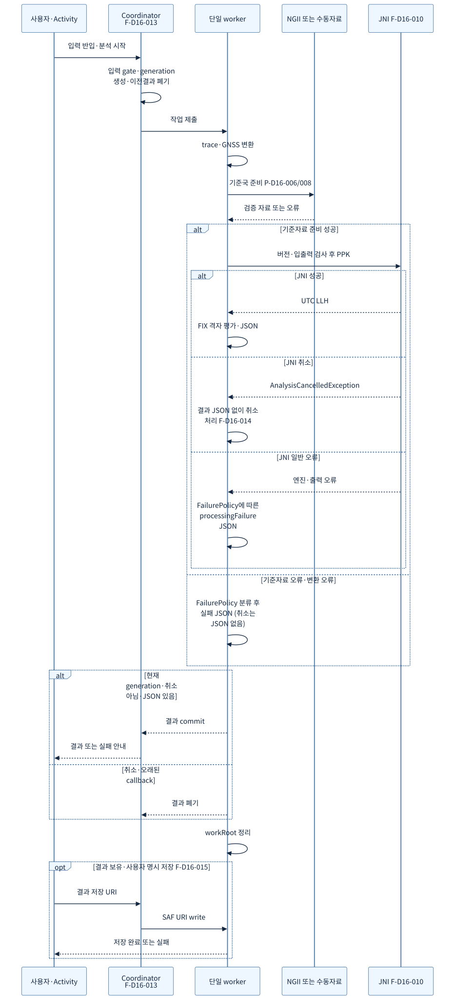